Code
dat <- read_csv("Data/Derived/ReddCounts_WGFD_1971-2021_cleaned_withFlowTempCovariates_SeparateFlowComponents_age0.csv")Purpose: Fit hierarchical Ricker stock-recruitment model to understand environmental effects on population productivity
Notes:
First, use this to pull fish data
dat <- read_csv("Data/Derived/ReddCounts_WGFD_1971-2021_cleaned_withFlowTempCovariates_SeparateFlowComponents_age0.csv")Pull covariate data for age-0, combine experienced and natural flow datasets
dat0 <- read_csv("Data/Derived/ReddCounts_WGFD_1971-2021_cleaned_withFlowTempCovariates_SeparateFlowComponents_age0.csv")
dat0b <- read_csv("Data/Derived/ReddCounts_WGFD_1971-2021_cleaned_withFlowTempCovariates_ExperiencedFlow_age0.csv") %>%
select(year, stream, natq_winmean, natq_winvar, natq_peakmag, natq_peaktime, z_natq_winmean, z_natq_winvar, z_natq_peakmag, z_natq_peaktime) %>%
rename(expq_winmean = natq_winmean,
expq_winvar = natq_winvar,
expq_peakmag = natq_peakmag,
expq_peaktime = natq_peaktime,
z_expq_winmean = z_natq_winmean,
z_expq_winvar = z_natq_winvar,
z_expq_peakmag = z_natq_peakmag,
z_expq_peaktime = z_natq_peaktime)
dat0 <- dat0 %>% left_join(dat0b)Pull covariate data for age-1, combine experienced and natural flow datasets
dat1 <- read_csv("Data/Derived/ReddCounts_WGFD_1971-2021_cleaned_withFlowTempCovariates_SeparateFlowComponents_age1.csv")
dat1b <- read_csv("Data/Derived/ReddCounts_WGFD_1971-2021_cleaned_withFlowTempCovariates_ExperiencedFlow_age1.csv") %>%
select(year, stream, natq_winmean, natq_winvar, natq_peakmag, natq_peaktime, z_natq_winmean, z_natq_winvar, z_natq_peakmag, z_natq_peaktime) %>%
rename(expq_winmean = natq_winmean,
expq_winvar = natq_winvar,
expq_peakmag = natq_peakmag,
expq_peaktime = natq_peaktime,
z_expq_winmean = z_natq_winmean,
z_expq_winvar = z_natq_winvar,
z_expq_peakmag = z_natq_peakmag,
z_expq_peaktime = z_natq_peaktime)
dat1 <- dat1 %>% left_join(dat1b)Drop Cody (very little data), Salt River tribs, and “ghost years”
dat <- dat %>%
filter(!stream %in% c("Cody", "Christiansen", "Dave", "Laker")) %>%
filter(!(stream == "Cowboy Cabin" & year %in% c(1980:1981))) %>%
filter(!(stream == "Flat" & year %in% c(1976:1979))) %>%
filter(!(stream == "Spring" & year %in% c(1988:1992)))Create summary table
summary.dat <- dat %>% filter(!is.na(reddsperkm)) %>% group_by(stream) %>% summarize('lat' = unique(lat), 'long' = unique(long), 'startyr' = min(year), 'endyr' = max(year), 'n.year' = length(unique(year)), "med.redds" = median(reddsperkm)) %>% arrange(stream) %>% ungroup()
datatable(summary.dat)write_csv(summary.dat, "ReddCounts_DataSummary.csv")Plot stock-recruit data
g <- ggplot(dat, aes(x = reddsperkm_lag4, y = reddsperkm, color = broodyr)) +
theme_bw() +
geom_smooth(color = "black") +
geom_point(alpha = 0.75) +
facet_wrap(~ stream, scales = 'free', ncol = 4) +
xlab('Spawning redd density (redds/km)') +
ylab('Recruitment redd density (redds/km)') +
theme(panel.grid = element_blank())
plot(g)
Plot productivity by stock/spawners
g <- ggplot(dat, aes(x = reddsperkm_lag4, y = log(reddsperkm/reddsperkm_lag4), color = broodyr)) +
theme_bw() +
geom_smooth(method ='lm', color = "black") +
geom_point(alpha = 0.75) +
facet_wrap(~ stream, scales = 'free', ncol = 4) +
xlab('Spawning redd density (redds/km)') +
ylab('ln(Recruits/Spawner)') +
theme(panel.grid = element_blank())
plot(g)
Add misc. variables (currently not used in the model)
# JLD mgmt regime
dat <- dat %>% mutate(regime = ifelse(year < 1989, 0, 1))
# Distance from JLD
djld <- read_csv("Flowline Distance/ReddCount_Sites_JLDDistance.csv") %>%
filter(!stream %in% c("Dave", "Snake River Side Channel", "Spring"))How much of the variation in productivity is explained by density-dependence alone? (sensu Jones et al. 2020)
dat2 <- dat %>% mutate(lnRS = log(reddsperkm / reddsperkm_lag4),
stream = as_factor(stream))
summary(lm(lnRS ~ reddsperkm_lag4 + stream:reddsperkm_lag4, dat2)) # ~37%
Call:
lm(formula = lnRS ~ reddsperkm_lag4 + stream:reddsperkm_lag4,
data = dat2)
Residuals:
Min 1Q Median 3Q Max
-2.65491 -0.32585 0.04252 0.32878 2.16889
Coefficients:
Estimate Std. Error t value
(Intercept) 1.059469 0.087723 12.078
reddsperkm_lag4 -0.012519 0.002065 -6.063
reddsperkm_lag4:streamBlacktail 0.009026 0.001984 4.550
reddsperkm_lag4:streamBlue Crane -0.050926 0.008190 -6.218
reddsperkm_lag4:streamCowboy Cabin -0.013250 0.004807 -2.757
reddsperkm_lag4:streamFish -0.010025 0.003744 -2.678
reddsperkm_lag4:streamFlat -0.044523 0.008485 -5.247
reddsperkm_lag4:streamLittle Bar BC -0.017217 0.003412 -5.046
reddsperkm_lag4:streamNowlin -0.014566 0.003740 -3.895
reddsperkm_lag4:streamPrice -0.016379 0.004442 -3.687
reddsperkm_lag4:streamSnake River Side Channel -0.015236 0.004466 -3.411
reddsperkm_lag4:streamSpring -0.010905 0.004186 -2.605
reddsperkm_lag4:streamUpper Bar BC 0.004217 0.002015 2.093
reddsperkm_lag4:streamLower Bar BC 0.005705 0.001978 2.884
Pr(>|t|)
(Intercept) < 2e-16 ***
reddsperkm_lag4 4.79e-09 ***
reddsperkm_lag4:streamBlacktail 8.32e-06 ***
reddsperkm_lag4:streamBlue Crane 2.05e-09 ***
reddsperkm_lag4:streamCowboy Cabin 0.006262 **
reddsperkm_lag4:streamFish 0.007895 **
reddsperkm_lag4:streamFlat 3.25e-07 ***
reddsperkm_lag4:streamLittle Bar BC 8.58e-07 ***
reddsperkm_lag4:streamNowlin 0.000126 ***
reddsperkm_lag4:streamPrice 0.000277 ***
reddsperkm_lag4:streamSnake River Side Channel 0.000751 ***
reddsperkm_lag4:streamSpring 0.009720 **
reddsperkm_lag4:streamUpper Bar BC 0.037376 *
reddsperkm_lag4:streamLower Bar BC 0.004260 **
---
Signif. codes: 0 '***' 0.001 '**' 0.01 '*' 0.05 '.' 0.1 ' ' 1
Residual standard error: 0.6103 on 255 degrees of freedom
(189 observations deleted due to missingness)
Multiple R-squared: 0.3973, Adjusted R-squared: 0.3666
F-statistic: 12.93 on 13 and 255 DF, p-value: < 2.2e-16Log annual redd count data and calculate number of years per population
# log
dat <- dat %>% mutate(rcraw_log = log(reddsperkm))
# how many years of data does each pop have?
datatable(dat %>% drop_na(rcraw_log) %>% group_by(stream) %>% summarize(nyr = n_distinct(rcraw_log)))Format fish data into matrices for JAGS model
# specify populations
pops <- sort(unique(dat$stream))
n.pops <- length(pops)
# specify years
n.years <- vector(length = n.pops)
years <- matrix(nrow = n.pops, ncol = 51)
for(p in 1:n.pops) {
n.years[p] <- length(unique(dat$year[dat$stream == pops[p]]))
years[p,1:n.years[p]] <- sort(unique(dat$year[dat$stream == pops[p]]))
}
# Spawners and Recruits
rec_raw <- matrix(nrow = n.pops, ncol = max(n.years))
# rec_cor <- matrix(nrow = n.pops, ncol = max(n.years))
# rec_cor_sd <- matrix(nrow = n.pops, ncol = max(n.years))
for(p in 1:n.pops) {
for(y in 1:n.years[p]) {
year <- years[p,y]
rec_raw[p,y] <- dat$rcraw_log[dat$stream == pops[p] & dat$year == year] # Raw, uncorrected ecruits (log scale)
# rec_cor[p,y] <- dat$rccor_log_mean[dat$stream == pops[p] & dat$year == year] # Corrected recruits (log scale)
# rec_cor_sd[p,y] <- dat$rccor_log_sd[dat$stream == pops[p] & dat$year == year] # recruitment uncertainty
}#next y
}#next pGet maximum spawners for initialization
maxY <- apply(exp(rec_raw), 1, max, na.rm = TRUE)
meanY <- apply(exp(rec_raw), 1, mean, na.rm = TRUE)Check dimensions
dim(years)[1] 13 51dim(rec_raw)[1] 13 51# dim(rec_cor)
# dim(rec_cor_sd)For age apportionment model (split covariate effects among ages 0 and 1), set up two arrays of covariates: one for covariates lagged to reflect conditions during age-0 (4 years) and another for covariates lagged to reflect conditions during age-1 (3 years)
Get covariate names
# names.covars1 <- grep("z", names(dat0), value = TRUE)[c(1:3,5:8,11,14:19)] # age-0
# names.covars0 <- grep("z", names(dat0), value = TRUE)[c(1:3,5:8,14:15,20,16:19)] # age-0
# names.covars0 <- grep("z", names(dat0), value = TRUE)[c(1:3,5:8,20,14:19)] # age-0
names.covars0 <- grep("z", names(dat0), value = TRUE)[c(1:2,6,8:10,16:21)]#[c(2:3,5,7:9,15:20)] # age-0
# names.covars2 <- grep("z", names(dat1), value = TRUE)[c(1:3,5:8,11,14:19)] # age-1
# names.covars1 <- grep("z", names(dat0), value = TRUE)[c(1:3,5:8,14:15,20,16:19)] # age-1
# names.covars1 <- grep("z", names(dat0), value = TRUE)[c(1:3,5:8,20,14:19)] # age-1
names.covars1 <- grep("z", names(dat1), value = TRUE)[c(1:2,6,8:10,16:21)]#[c(2:3,5,7:9,15:20)] # age-1
print(names.covars1) [1] "z_jld_rampdur" "z_jld_rampratemindoy" "z_jld_winvar"
[4] "z_jld_summean" "z_jld_peakmag" "z_jld_peaktime"
[7] "z_natq_peakmag" "z_natq_peaktime" "z_temp_falmean"
[10] "z_temp_winmean" "z_temp_sprmean" "z_temp_summean" Format covariate data into matrices for JAGS model
n.covars <- length(names.covars0)
covars0 <- array(data = NA, dim = c(n.pops, max(n.years), n.covars))
covars1 <- array(data = NA, dim = c(n.pops, max(n.years), n.covars))
for(p in 1:n.pops) {
for(y in 1:n.years[p]) {
yr <- years[p,y]
for(c in 1:n.covars) {
covars0[p,y,c] <- as.numeric(dat0 %>% select(stream, year, names.covars0[c]) %>% filter(stream == pops[p] & year == yr) %>% select(3))
covars1[p,y,c] <- as.numeric(dat1 %>% select(stream, year, names.covars1[c]) %>% filter(stream == pops[p] & year == yr) %>% select(3))
} # next c
} # next y
#print(p)
} # next p
dim(covars0)[1] 13 51 12dim(covars1)[1] 13 51 12Add interaction, squared terms, and/or age-specific effects (if applicable).
# names.covars0 <- c(names.covars0, "z_int_peaktime", "z_int_peakmag") # add names for additional terms
# names.covars1 <- c(names.covars1, "z_int_peaktime", "z_int_peakmag") # add names for additional terms
# covars0 <- abind::abind(covars0, covars0[,,6]*covars0[,,9], covars0[,,5]*covars0[,,8], along = 3)
# covars1 <- abind::abind(covars1, covars1[,,6]*covars1[,,9], covars1[,,5]*covars1[,,8], along = 3)
# n.covars <- length(names.covars0)
# names.covars0 <- c(names.covars0, "z_int_peakmag", "z_int_peaktime") # add names for additional terms
# names.covars1 <- c(names.covars1, "z_int_peakmag", "z_int_peaktime") # add names for additional terms
# covars0 <- abind::abind(covars0, covars0[,,5]*covars0[,,7], covars0[,,6]*covars0[,,8], along = 3)
# covars1 <- abind::abind(covars1, covars1[,,5]*covars1[,,7], covars0[,,6]*covars0[,,8], along = 3)
# n.covars <- length(names.covars0)
# add terms to covariate name vectors
names.covars0 <- c(names.covars0, "z_int_peaktime", "z_jld_peakmag_1") # add names for additional terms
names.covars0[5] <- "z_jld_peakmag_0"
names.covars1 <- c(names.covars1, "z_int_peaktime", "z_jld_peakmag_1") # add names for additional terms
names.covars1[5] <- "z_jld_peakmag_0"
# add peak timing interaction and age-1 managed peak magnitude
covars0 <- abind::abind(covars0, covars0[,,6]*covars0[,,8], covars1[,,5], along = 3)
covars1 <- abind::abind(covars1, covars0[,,6]*covars0[,,8], covars1[,,5], along = 3)
# force to age-0 managed flow
covars1[,,5] <- covars0[,,5]
# rearrange order for plotting
names.covars0 <- names.covars0[c(1:5,14,6:13)]
names.covars1 <- names.covars1[c(1:5,14,6:13)]
covars0 <- covars0[,,c(1:5,14,6:13)]
covars1 <- covars1[,,c(1:5,14,6:13)]
# check
n.covars <- length(names.covars0)# OLD - NOT USED
# # set up covariate array
# names.covars <- grep("z", names(dat), value = TRUE)[c(1:8,11,14:19)] # for separated flow components
# names.covars <- grep("z", names(dat), value = TRUE)[c(1:5,7:12)] # for experienced flow
# names.covars <- grep("z", names(dat), value = TRUE)[c(1:3,5:8,11,14:19)]
# names.covars <- grep("z", names(dat), value = TRUE)[c(1:3,14:19)]
#
#
# n.covars <- length(names.covars)
# covars <- array(data = NA, dim = c(n.pops, max(n.years), n.covars))
# for(p in 1:n.pops) {
# for(y in 1:n.years[p]) {
# yr <- years[p,y]
# for(c in 1:n.covars) {
# covars[p,y,c] <- as.numeric(dat %>% select(stream, year, names.covars[c]) %>% filter(stream == pops[p] & year == yr) %>% select(3))
# } # next c
# } # next y
# print(p)
# } # next p
# dim(covars)
#
# # (for separate flow components) Full interaction model: add array slices for squared terms, interaction terms
# names.covars <- c(names.covars, "z_int_peakmag", "z_int_peaktime", "z_int_winmeanflow", "z_int_jldwinmeanvar") # add names for additional terms
# covars <- abind::abind(covars, covars[,,7]*covars[,,10], covars[,,8]*covars[,,11], covars[,,4]*covars[,,9], covars[,,4]*covars[,,5], along = 3)
# n.covars <- length(names.covars)
#
# # (for experienced flow) Full interaction model: add array slices for squared terms, interaction terms
# names.covars <- c(names.covars, "z_int_winflowmeanvar", "z_int_peakmagtime") # add names for additional terms
# covars <- abind::abind(covars, covars[,,4]*covars[,,5], covars[,,6]*covars[,,7], along = 3)
# n.covars <- length(names.covars)
#
# names.covars <- c(names.covars, "z_int_peakmag", "z_int_peaktime", "z_int_winmeanvar") # add names for additional terms
# covars <- abind::abind(covars, covars[,,5]*covars[,,7], covars[,,6]*covars[,,8], covars[,,13]*covars[,,14], along = 3)
# n.covars <- length(names.covars)
#
# # check dimensions
# dim(covars)
#
# # create matrix for pre/post 1989
# regime <- matrix(data = NA, nrow = nrow(years), ncol = ncol(years))
# for (i in 1:nrow(regime)) { for (j in 1:ncol(regime)) { regime[i,j] <- ifelse(years[i,j] < 1989, 0, 1) }}
# # names.covars <- c(names.covars, "regime")
# # covars <- abind::abind(covars, regime, along = 3)
# # n.covars <- length(names.covars)
# plot(covars1[,,1] ~ covars2[,,1])
# plot(covars1[,,2] ~ covars2[,,2])
# plot(covars1[,,3] ~ covars2[,,3])
# plot(covars1[,,4] ~ covars2[,,4])
# plot(covars1[,,5] ~ covars2[,,5])
# plot(covars1[,,6] ~ covars2[,,6])
# plot(covars1[,,7] ~ covars2[,,7])
# plot(covars1[,,8] ~ covars2[,,8])
# plot(covars1[,,9] ~ covars2[,,9])
# plot(covars1[,,10] ~ covars2[,,10])
# plot(covars1[,,11] ~ covars2[,,11])
# plot(covars1[,,12] ~ covars2[,,12])
# plot(covars1[,,13] ~ covars2[,,13])
# plot(covars1[,,14] ~ covars2[,,14])Add empty columns for model initialization
# recruitment
rec_raw <- cbind(matrix(NA, nrow = nrow(rec_raw), ncol = 4), rec_raw)
# rec_cor <- cbind(matrix(NA, nrow = nrow(rec_cor), ncol = 4), rec_cor)
# rec_cor_sd <- cbind(matrix(NA, nrow = nrow(rec_cor_sd), ncol = 4), rec_cor_sd)
# covariates
# rl <- list()
# for (i in 1:dim(covars)[3]) { rl[[i]] <- cbind(matrix(NA, nrow = nrow(covars), ncol = 4), covars[,,i]) }
# covars <- abind::abind(rl, along = 3)
rl <- list()
for (i in 1:dim(covars0)[3]) { rl[[i]] <- cbind(matrix(NA, nrow = nrow(covars0), ncol = 4), covars0[,,i]) }
covars0 <- abind::abind(rl, along = 3)
rl <- list()
for (i in 1:dim(covars1)[3]) { rl[[i]] <- cbind(matrix(NA, nrow = nrow(covars1), ncol = 4), covars1[,,i]) }
covars1 <- abind::abind(rl, along = 3)
# years
n.years <- n.years + 4
# regime
# regime <- cbind(matrix(NA, nrow = nrow(regime), ncol = 4), regime)Check dimensions
# check dimensions
dim(rec_raw)[1] 13 55# dim(rec_cor)
# dim(rec_cor_sd)
# dim(covars)
dim(covars0)[1] 13 55 14dim(covars1)[1] 13 55 14max(n.years)[1] 55State-space hierarchical Ricker stock-recruitment model with auto-correlated residuals, where observation error is an estimated parameter. Covariates can affect productivity at either age-0 or age-1, with a parameter that estimates the relative importance of effects at each age class. Observations are distributed log-normally around (latent, phases 1-2) redd densities. Log-log scale ensures positive values and allows sigma.oe to be estimated on a log-scale and directly compared to net error model estimates of redd count error from Baldock et al. (2023 CJFAS): 0.38 (mean and 95% CI = 0.34, 0.44)
cat("model {
##--- LIKELIHOOD ---------------------------------------------------##
# OBSERVATION PROCESS
for (j in 1:numPops) {
for (i in 1:numYears[j]) {
logY0[j,i] ~ dnorm(logY[j,i], pow(sigma.oe, -2))
N[j,i] <- exp(logY[j,i])
}
}
# STATE PROCESS
for (j in 1:numPops) {
# STARTING VALUES / INITIALIZATION
Y1[j] ~ dunif(1, maxY[j])
Y2[j] ~ dunif(1, maxY[j])
Y3[j] ~ dunif(1, maxY[j])
Y4[j] ~ dunif(1, maxY[j])
logY[j,1] <- log(Y1[j])
logY[j,2] <- log(Y2[j])
logY[j,3] <- log(Y3[j])
logY[j,4] <- log(Y4[j])
logresid[j,4] <- 0
# ALL OTHER YEARS
for (i in 5:numYears[j]) {
# Derive population and year specific covariate effects
for (c in 1:numCovars) {
covars0[j,i,c] ~ dnorm(0, pow(1, -2))
covars1[j,i,c] ~ dnorm(0, pow(1, -2))
cov.eff[j,i,c] <- coef[j,c] * (((1-p[c]) * covars0[j,i,c]) + (p[c] * covars1[j,i,c])) }
# Likelihood and predictions
logY[j,i] ~ dnorm(logpred2[j,i], pow(sigma.pe[j], -2))
logpred[j,i] <- logY[j,i-4] + A[j] - B[j] * exp(logY[j,i-4]) + sum(cov.eff[j,i,1:numCovars])
# save observations and latent states in loop to exclude starting values from model object
loglatent[j,i] <- logY[j,i]
logobserv[j,i] <- logY0[j,i]
# Auto-correlated residuals
logresid[j,i] <- logY[j,i] - logpred[j,i]
logpred2[j,i] <- logpred[j,i] + logresid[j,i-1] * phi[j]
logresid2[j,i] <- logY[j,i] - logpred2[j,i]
# Log-likelihood
loglik[j,i] <- logdensity.norm(logY0[j,i], logY[j,i], pow(sigma.oe, -2))
}
}
##--- PRIORS --------------------------------------------------------##
# Observation error is shared among populations, constrained prior...consider centering this on Baldock et al (2023) CJFAS estimate
sigma.oe ~ dunif(0.001, 100) #dnorm(0, pow(0.5, -2)) T(0,)
# Population-specific parameters
for (j in 1:numPops) {
# Ricker A
#expA[j] ~ dunif(0, 20)
#A[j] <- log(expA[j])
A[j] ~ dnorm(mu.A, pow(sigma.A, -2))
# Ricker B
B[j] ~ dnorm(0, pow(1, -2)) T(0,)
#B[j] ~ dnorm(mu.B, pow(sigma.B, -2))
# Covariate effects
for (c in 1:numCovars) { coef[j,c] ~ dnorm(mu.coef[c], pow(sigma.coef[c], -2)) }
# Process error
sigma.pe[j] ~ dunif(0.001, 100) #dnorm(0, pow(5, -2)) T(0,)
# auto-correlated residuals
phi[j] ~ dunif(-0.99, 0.99)
}
# Global Ricker A and B
mu.A <- log(exp.mu.A) #dunif(0, 20)
exp.mu.A ~ dunif(0, 20)
sigma.A ~ dunif(0.001, 100)
#mu.B ~ dnorm(0, pow(1, -2)) T(0,)
#sigma.B ~ dunif(0.001, 100)
# Global covariate effects
for (c in 1:numCovars) {
mu.coef[c] ~ dnorm(0, pow(25, -2))
sigma.coef[c] ~ dunif(0.001, 100) #dnorm(0, pow(5, -2)) T(0.001,100)
p[c] ~ dunif(0, 1)
}
##--- DERIVED QUANTITIES ---------------------------------------------##
# Population specific carrying capacity
for (j in 1:numPops) { K[j] <- A[j] / B[j] }
}", file = "JAGS Models/Ricker_Hierarchical_StateSpace_OEestimated_Covars_Proportional.txt")Same as above, but covariates only affect productivity at age-0
cat("model {
##--- LIKELIHOOD ---------------------------------------------------##
# OBSERVATION PROCESS
for (j in 1:numPops) {
for (i in 1:numYears[j]) {
logY0[j,i] ~ dnorm(logY[j,i], pow(sigma.oe, -2))
N[j,i] <- exp(logY[j,i])
}
}
# STATE PROCESS
for (j in 1:numPops) {
# STARTING VALUES / INITIALIZATION
Y1[j] ~ dunif(1, maxY[j])
Y2[j] ~ dunif(1, maxY[j])
Y3[j] ~ dunif(1, maxY[j])
Y4[j] ~ dunif(1, maxY[j])
logY[j,1] <- log(Y1[j])
logY[j,2] <- log(Y2[j])
logY[j,3] <- log(Y3[j])
logY[j,4] <- log(Y4[j])
logresid[j,4] <- 0
# ALL OTHER YEARS
for (i in 5:numYears[j]) {
# Derive population and year specific covariate effects
for (c in 1:numCovars) {
covars[j,i,c] ~ dnorm(0, pow(1, -2))
cov.eff[j,i,c] <- coef[j,c] * covars[j,i,c] }
# Likelihood and predictions
logY[j,i] ~ dnorm(logpred2[j,i], pow(sigma.pe[j], -2))
logpred[j,i] <- logY[j,i-4] + A[j] - B[j] * exp(logY[j,i-4]) + sum(cov.eff[j,i,1:numCovars])
# save observations and latent states in loop to exclude starting values from model object
loglatent[j,i] <- logY[j,i]
logobserv[j,i] <- logY0[j,i]
# Auto-correlated residuals
logresid[j,i] <- logY[j,i] - logpred[j,i]
logpred2[j,i] <- logpred[j,i] + logresid[j,i-1] * phi[j]
logresid2[j,i] <- logY[j,i] - logpred2[j,i]
# Log-likelihood
loglik[j,i] <- logdensity.norm(logY0[j,i], logY[j,i], pow(sigma.oe, -2))
}
}
##--- PRIORS --------------------------------------------------------##
# Observation error is shared among populations, constrained prior...consider centering this on Baldock et al (2023) CJFAS estimate
sigma.oe ~ dunif(0.001, 100) #dnorm(0, pow(0.5, -2)) T(0,)
# Population-specific parameters
for (j in 1:numPops) {
# Ricker A
#expA[j] ~ dunif(0, 20)
#A[j] <- log(expA[j])
A[j] ~ dnorm(mu.A, pow(sigma.A, -2))
# Ricker B
B[j] ~ dnorm(0, pow(1, -2)) T(0,)
#B[j] ~ dnorm(mu.B, pow(sigma.B, -2))
# Covariate effects
for (c in 1:numCovars) { coef[j,c] ~ dnorm(mu.coef[c], pow(sigma.coef[c], -2)) }
# Process error
sigma.pe[j] ~ dunif(0.001, 100) #dnorm(0, pow(5, -2)) T(0,)
# auto-correlated residuals
phi[j] ~ dunif(-0.99, 0.99)
}
# Global Ricker A and B
mu.A <- log(exp.mu.A) #dunif(0, 20)
exp.mu.A ~ dunif(0, 20)
sigma.A ~ dunif(0.001, 100)
#mu.B ~ dnorm(0, pow(1, -2)) T(0,)
#sigma.B ~ dunif(0.001, 100)
# Global covariate effects
for (c in 1:numCovars) {
mu.coef[c] ~ dnorm(0, pow(25, -2))
sigma.coef[c] ~ dunif(0.001, 100) #dnorm(0, pow(5, -2)) T(0.001,100)
}
##--- DERIVED QUANTITIES ---------------------------------------------##
# Population specific carrying capacity
for (j in 1:numPops) { K[j] <- A[j] / B[j] }
}", file = "JAGS Models/Ricker_Hierarchical_StateSpace_OEestimated_Covars.txt")Parameters to monitor
jags.params <- c("A", "B", "K", "mu.A", "sigma.A", "sigma.oe", "sigma.pe", # Ricker parameters
"coef", "mu.coef", "sigma.coef", "cov.eff", "p", # covariate effects
"logpred", "logpred2", # predictions
"loglatent", "logobserv", # latent states and observations
"phi", "logresid", "logresid2", "loglik") # AR1 term, residuals, log-likelihoodRun model in JAGS
st <- Sys.time()
jags.data <- list("logY0" = rec_raw, "numYears" = n.years, "numPops" = n.pops, "maxY" = maxY, "covars0" = covars0, "covars1" = covars1, "numCovars" = n.covars)
mod_01pb <- jags.parallel(data = jags.data, inits = NULL, parameters.to.save = jags.params,
model.file = "JAGS Models/Ricker_Hierarchical_StateSpace_OEestimated_Covars_Proportional.txt",
n.chains = 20, n.thin = 200, n.burnin = 10000, n.iter = 60000, DIC = TRUE)
MCMCtrace(mod_01pb, ind = TRUE, params = c("A", "B", "mu.A", "sigma.A", "sigma.oe", "sigma.pe", "mu.coef", "sigma.coef", "p", "phi"),
filename = "Model output/MCMCtrace_ReddCountsRicker_Test_Age01p_winvar_AgeSpecMgdPeakMag_2.pdf") # write out traceplots
Sys.time() - st
beep()Save model output as RDS file
saveRDS(mod_01pb, "Model output/ReddCountsRicker_Phase1_Age01p_winvar_AgeSpecMgdPeakMag.RDS")Read in model RDS file
mod_01pb <- readRDS("Model output/ReddCountsRicker_Phase1_Age01p_winvar_AgeSpecMgdPeakMag.RDS")Check R-hat values
mod_01pb$BUGSoutput$summary[,8][mod_01pb$BUGSoutput$summary[,8] > 1.01] K[7] K[12] deviance loglatent[9,42] sigma.oe
1.082886 1.013836 1.010799 1.025147 1.010924 NOT CURRENTLY USED
Parameters to monitor
jags.params <- c("A", "B", "K", "mu.A", "sigma.A", "sigma.oe", "sigma.pe", # Ricker parameters
"coef", "mu.coef", "sigma.coef", "cov.eff", # covariate effects
"logpred", "logpred2", # predictions
"loglatent", "logobserv", # latent states and observations
"phi", "logresid", "logresid2", "loglik") # AR1 term, residuals, log-likelihoodRun model in JAGS
st <- Sys.time()
jags.data <- list("logY0" = rec_raw, "numYears" = n.years, "numPops" = n.pops, "maxY" = maxY, "covars" = covars0, "numCovars" = n.covars)
mod_0 <- jags.parallel(data = jags.data, inits = NULL, parameters.to.save = jags.params,
model.file = "JAGS Models/Ricker_Hierarchical_StateSpace_OEestimated_Covars.txt",
n.chains = 20, n.thin = 200, n.burnin = 10000, n.iter = 40000, DIC = TRUE)
MCMCtrace(mod_0, ind = TRUE, params = c("A", "B", "mu.A", "sigma.A", "sigma.oe", "sigma.pe", "mu.coef", "sigma.coef", "p", "phi"),
filename = "Model output/MCMCtrace_ReddCountsRicker_Test_Age0.pdf") # write out traceplots
Sys.time() - st
beep()Check R-hat values
mod_0$BUGSoutput$summary[,8][mod_0$BUGSoutput$summary[,8] > 1.05]Save model output as RDS file
saveRDS(mod_0, "Model output/ReddCountsRicker_Phase1_Age0.RDS")Read in model RDS file
mod_0 <- readRDS("Model output/ReddCountsRicker_Phase1_Age0.RDS")ll.arr <- mod_01pb$BUGSoutput$sims.list$loglik # extract the log-likelihood estimates for each MCMC sample
ll.mat <- ll.arr[,,1]
for (j in 2:dim(ll.arr)[3]) {
ll.mat <- cbind(ll.mat, ll.arr[,,j])
}
rf <- relative_eff(exp(ll.mat), chain_id = rep(1:20, each = 250))
my_loo <- loo(ll.mat, r_eff = rf)
plot(my_loo)
Set top model and save MCMC samples and parameter summary
topmod <- mod_01pb
# generate MCMC samples and store as an array
modelout <- topmod$BUGSoutput
param.summary <- modelout$summary
McmcList <- vector("list", length = dim(modelout$sims.array)[2])
for(i in 1:length(McmcList)) {
McmcList[[i]] = as.mcmc(modelout$sims.array[,i,])
}
# rbind MCMC samples from 3 chains
Mcmcdat <- rbind(McmcList[[1]], McmcList[[2]], McmcList[[3]], McmcList[[4]], McmcList[[5]],
McmcList[[6]], McmcList[[7]], McmcList[[8]], McmcList[[9]], McmcList[[10]],
McmcList[[11]], McmcList[[12]], McmcList[[13]], McmcList[[14]], McmcList[[15]],
McmcList[[16]], McmcList[[17]], McmcList[[18]], McmcList[[19]], McmcList[[20]])
param.summary <- as.data.frame(modelout$summary)
# save model output
write_csv(as.data.frame(Mcmcdat), "Model output/ReddCountsRicker_Phase1_Age01p_mcmcsamps.csv")
write.csv(as.data.frame(modelout$summary), "Model output/ReddCountsRicker_Phase1_Age01p_ParameterSummary.csv", row.names = T)Get expected and observed MCMC samples
ppdat_exp <- as.matrix(Mcmcdat[,startsWith(colnames(Mcmcdat), "logpred2")])
ppdat_obs <- as.matrix(Mcmcdat[,startsWith(colnames(Mcmcdat), "loglatent")])Histogram of residuals
par(mar = c(4,4,1,1), mgp = c(2.5,1,0))
hist((ppdat_obs - ppdat_exp), main = "", xlab = "Observed - Expected")
legend("topright", bty = "n", legend = paste("Median Resid. = ", round(median((ppdat_obs - ppdat_exp)), digits = 4), sep = ""))
abline(v = median(unlist(ppdat_obs - ppdat_exp)), col = "red", lwd = 2)
box(bty = "o")
logresid <- matrix(data = NA, nrow = nrow(rec_raw), ncol = ncol(rec_raw)+4)
for (j in 1:nrow(rec_raw)) {
for (i in 1:ncol(rec_raw)+4) {
try(logresid[j,i] <- param.summary[paste("logresid[",j,",",i,"]", sep = ""),1])
}
}Time series of residuals (AR1)
par(mfrow = c(4,4), mgp = c(2,0.8,0), mar = c(2.5, 3, 1.5, 0.5))
for (i in 1:n.pops) {
plot(logresid[i,c(5:55)] ~ years[i,c(1:51)], pch = 16, xlab = "", ylab = "log residuals", main = pops[i], xlim = c(1970, 2021), ylim = c(min(logresid, na.rm = T), max(logresid, na.rm = T)))
lines(logresid[i,c(5:55)] ~ years[i,c(1:51)])
abline(h = 0, lty = 2)
}
time series of residuals (AR1), unique y scale
par(mfrow = c(4,4), mgp = c(2,0.8,0), mar = c(2.5, 3, 1.5, 0.5))
for (i in 1:n.pops) {
plot(logresid[i,c(5:55)] ~ years[i,c(1:51)], pch = 16, xlab = "", ylab = "log residuals", main = pops[i], xlim = c(1970, 2021))
lines(logresid[i,c(5:55)] ~ years[i,c(1:51)])
abline(h = 0, lty = 2)
}
Residuals AFTER accounting for autocorrelation sensu Murdoch et al 2024 CJFAS
logresid <- matrix(data = NA, nrow = nrow(rec_raw), ncol = ncol(rec_raw)+4)
for (j in 1:nrow(rec_raw)) {
for (i in 1:ncol(rec_raw)+4) {
try(logresid[j,i] <- param.summary[paste("logresid2[",j,",",i,"]", sep = ""),1])
}
}time series of residuals (AR1)
par(mfrow = c(4,4), mgp = c(2,0.8,0), mar = c(2.5, 3, 1.5, 0.5))
for (i in 1:n.pops) {
plot(logresid[i,c(5:55)] ~ years[i,c(1:51)], pch = 16, xlab = "", ylab = "log residuals", main = pops[i], xlim = c(1970, 2021), ylim = c(min(logresid, na.rm = T), max(logresid, na.rm = T)))
lines(logresid[i,c(5:55)] ~ years[i,c(1:51)])
abline(h = 0, lty = 2)
}
time series of residuals (AR1), unique y scale
par(mfrow = c(4,4), mgp = c(2,0.8,0), mar = c(2.5, 3, 1.5, 0.5))
for (i in 1:n.pops) {
plot(logresid[i,c(5:55)] ~ years[i,c(1:51)], pch = 16, xlab = "", ylab = "log residuals", main = pops[i], xlim = c(1970, 2021))
lines(logresid[i,c(5:55)] ~ years[i,c(1:51)])
abline(h = 0, lty = 2)
}
Show residual autocorrelation plots by population
par(mfrow = c(4,4), mgp = c(2,0.8,0), mar = c(3, 3, 0.5, 0.5))
for (i in 1:n.pops) {
pacf(logresid[i,][complete.cases(logresid[i,])], main = pops[i])
}
# Bayesian p-value
sum(ppdat_exp > ppdat_obs) / (dim(ppdat_obs)[1]*dim(ppdat_obs)[2])[1] 0.4864362Note that this isn’t a posterior predictive check in the true sense, but rather a comparison between the model-estimated latent states (log redd density) and the model predicted means.
par(mar = c(4,4,1,1), mgp = c(2.5,1,0))
plot(x = seq(from = 1.5, to = 6.5, length.out = 100), y = seq(from = 1.5, to = 6.5, length.out = 100), pch = NA, xlab = "Latent ln(recruitment)", ylab = "Median posterior expected ln(recruitment)")
points(apply(ppdat_exp, 2, median, na.rm = T) ~ apply(ppdat_obs, 2, median, na.rm = T))
legend("topleft", bty = "n", legend = paste("Bayesian p-value = ", round(sum(ppdat_exp > ppdat_obs) / (dim(ppdat_obs)[1]*dim(ppdat_obs)[2]), digits = 3), sep = ""))
abline(a = 0, b = 1, col = "red", lwd = 2)
Pull latent and predicted abundance from model output
# set up matrices: latent states
N_med <- matrix(data = NA, nrow = nrow(rec_raw), ncol = ncol(rec_raw)+4)
N_low <- matrix(data = NA, nrow = nrow(rec_raw), ncol = ncol(rec_raw)+4)
N_upp <- matrix(data = NA, nrow = nrow(rec_raw), ncol = ncol(rec_raw)+4)
# set up matrices: predictions
P_med <- matrix(data = NA, nrow = nrow(rec_raw), ncol = ncol(rec_raw)+4)
P_low <- matrix(data = NA, nrow = nrow(rec_raw), ncol = ncol(rec_raw)+4)
P_upp <- matrix(data = NA, nrow = nrow(rec_raw), ncol = ncol(rec_raw)+4)
# pull latent and predicted abundance from parameter summary
for (j in 1:nrow(rec_raw)) {
for (i in 1:ncol(rec_raw)+4) {
# try(N_med[j,i] <- exp(param.summary[paste("loglatent[",j,",",i,"]", sep = ""),5]))
# try(N_low[j,i] <- exp(param.summary[paste("loglatent[",j,",",i,"]", sep = ""),3]))
# try(N_upp[j,i] <- exp(param.summary[paste("loglatent[",j,",",i,"]", sep = ""),7]))
#
# try(P_med[j,i] <- exp(param.summary[paste("logpred2[",j,",",i,"]", sep = ""),5]))
# try(P_low[j,i] <- exp(param.summary[paste("logpred2[",j,",",i,"]", sep = ""),3]))
# try(P_upp[j,i] <- exp(param.summary[paste("logpred2[",j,",",i,"]", sep = ""),7]))
loglatent <- NA
logpred2 <- NA
try(loglatent <- Mcmcdat[,paste("loglatent[",j,",",i,"]", sep = "")])
try(logpred2 <- Mcmcdat[,paste("logpred2[",j,",",i,"]", sep = "")])
try(N_med[j,i] <- quantile(exp(loglatent), prob = 0.50))
try(N_low[j,i] <- quantile(exp(loglatent), prob = 0.025))
try(N_upp[j,i] <- quantile(exp(loglatent), prob = 0.975))
try(P_med[j,i] <- quantile(exp(logpred2), prob = 0.50))
try(P_low[j,i] <- quantile(exp(logpred2), prob = 0.025))
try(P_upp[j,i] <- quantile(exp(logpred2), prob = 0.975))
}
}Set up and check color palette for color blindness accessibility
rec <- rec_raw
popshort <- c("THCH", "BLKT", "BLCR", "COCA", "FISH", "FLAT", "LTBC", "LOBC", "NOWL", "PRCE", "SRSC", "SPRG", "UPBC")
mycols <- c("orchid1", "forestgreen")# c("darkorange", "dodgerblue") # hcl.colors(2, "Red-Green")
palette_check(col2hcl(mycols), plot = TRUE)
name n tolerance ncp ndcp min_dist mean_dist max_dist
1 normal 2 85.67993 1 1 85.67993 85.67993 85.67993
2 deuteranopia 2 85.67993 1 0 50.06492 50.06492 50.06492
3 protanopia 2 85.67993 1 0 55.64110 55.64110 55.64110
4 tritanopia 2 85.67993 1 0 56.34705 56.34705 56.34705Plot time series data with observations, latent states, and model fits.
par(mfrow = c(3,5), mgp = c(2,0.6,0), mar = c(1.5, 1.2, 1.5, 1), oma = c(2.5,3,0,0))
for (i in 1:n.pops) {
plot(exp(rec_raw[i,c(5:55)]) ~ years[i,c(1:51)], type = "n", xlab = "", ylab = "", xlim = c(1970, 2021), ylim = c(0, exp(max(rec_raw[i,], na.rm = T))))
title(popshort[i], line = 0.25)
# pop-specific years
yrpreds <- as.numeric(na.omit(years[i,c(1:51)]))#[1:(length(as.numeric(na.omit(years[i,c(1:51)])))-4)]
# pop-specific latent states
nmedpreds <- as.numeric(na.omit(N_med[i,c(5:55)]))
nlowpreds <- as.numeric(na.omit(N_low[i,c(5:55)]))
nupppreds <- as.numeric(na.omit(N_upp[i,c(5:55)]))
# pop-specific predictions
pmedpreds <- as.numeric(na.omit(P_med[i,c(5:55)]))
plowpreds <- as.numeric(na.omit(P_low[i,c(5:55)]))
pupppreds <- as.numeric(na.omit(P_upp[i,c(5:55)]))
# carrying capacity
abline(h = param.summary[paste("K[",i,"]", sep = ""),5], lty = 3)
# plot latent states
lines(nmedpreds ~ yrpreds, lwd = 1.5, col = mycols[1])
polygon(x = c(yrpreds, rev(yrpreds)), y = c(c(nlowpreds), rev(nupppreds)), col = scales::alpha(mycols[1], 0.3), border = NA)
# plot predictions
lines(pmedpreds ~ yrpreds, lwd = 1.5, col = mycols[2])
polygon(x = c(yrpreds, rev(yrpreds)), y = c(c(plowpreds), rev(pupppreds)), col = scales::alpha(mycols[2], 0.3), border = NA)
# plot observations
points(exp(rec_raw[i,c(5:55)]) ~ years[i,c(1:51)], pch = 1)
# legend
#legend("topright", legend = pops[i], bty = "n", border = NA, col = NA, fill = NA, cex = 1.25)
}
mtext("Year", side = 1, line = 1, outer = T, cex = 1.25)
mtext(expression("Redds km"^-1), side = 2, line = 1, outer = T, cex = 1.25)
plot.new()
legend("center", legend = c("Observations", "Latent states", "Predictions"), pch = c(1,NA,NA), lwd = c(NA,2,2), col = c("black", mycols[1], mycols[2]), bty = "n", cex = 1.5)
Population summaries of latent states and carrying capacity, arranged from least to most variable (based on CV).
means <- apply(N_med, 1, mean, na.rm = T)
sds <- apply(N_med, 1, sd, na.rm = T)
cvs <- sds/means
mins <- apply(N_med, 1, min, na.rm = T)
maxs <- apply(N_med, 1, max, na.rm = T)
relc <- maxs/mins
ks <- param.summary[grep("K", row.names(param.summary), value = TRUE),5]
poptib <- tibble(pop = pops, mean = round(means, digits = 3), sd = round(sds, digits = 3), cv = round(cvs, digits = 3), min = round(mins, digits = 3), max = round(maxs, digits = 3), K = round(ks, digits = 3))
datatable(poptib %>% arrange(cv))View global covariate effect summaries
param.summary[paste("mu.coef[", c(1:14), "]", sep = ""),] mean sd 2.5% 25% 50%
mu.coef[1] 0.079232711 0.07325906 -0.053299365 0.0293525332 0.07593300
mu.coef[2] 0.141550531 0.07947187 -0.042278569 0.0976199136 0.14719984
mu.coef[3] 0.000930315 0.13280375 -0.223871753 -0.1005270358 -0.01237768
mu.coef[4] -0.106567867 0.07238019 -0.240555597 -0.1522338597 -0.11183206
mu.coef[5] 0.068251641 0.03703378 -0.008618370 0.0446501725 0.06884714
mu.coef[6] -0.061056709 0.04015040 -0.142190429 -0.0867302637 -0.06087162
mu.coef[7] 0.058812715 0.05826810 -0.056761211 0.0202859907 0.06063188
mu.coef[8] 0.083534376 0.07216456 -0.058393145 0.0375748947 0.08321882
mu.coef[9] -0.121142045 0.05975962 -0.238155841 -0.1610569482 -0.12109833
mu.coef[10] 0.049590788 0.07286982 -0.090555590 -0.0009843697 0.05044949
mu.coef[11] -0.097661815 0.06807262 -0.230164489 -0.1416269295 -0.10035255
mu.coef[12] -0.180946461 0.10317632 -0.378888931 -0.2513142724 -0.18108549
mu.coef[13] 0.100910227 0.05529964 -0.008479135 0.0648982206 0.10052247
mu.coef[14] -0.121351454 0.04018293 -0.200575309 -0.1470737394 -0.12129852
75% 97.5% Rhat n.eff
mu.coef[1] 0.12651516 0.232548653 1.002433 3100
mu.coef[2] 0.19369104 0.284432491 1.004702 1900
mu.coef[3] 0.09422786 0.276374828 1.001396 4400
mu.coef[4] -0.06695993 0.053697130 1.004772 1800
mu.coef[5] 0.09249194 0.139362548 1.003892 2200
mu.coef[6] -0.03477393 0.018061284 1.008078 1200
mu.coef[7] 0.09827322 0.168819763 1.003851 2200
mu.coef[8] 0.13097681 0.223917494 1.007587 1200
mu.coef[9] -0.08130613 -0.003644080 1.004191 2000
mu.coef[10] 0.09900462 0.194008892 1.004794 1800
mu.coef[11] -0.05508958 0.046098070 1.001728 3900
mu.coef[12] -0.10568382 0.009254555 1.007500 1200
mu.coef[13] 0.13665995 0.211871967 1.001716 3900
mu.coef[14] -0.09541837 -0.042463380 1.004347 2000Coerce to ggs object
mod.gg <- ggs(as.mcmc(topmod), keep_original_order = TRUE)Remind covariate names…
names.covars0 [1] "z_jld_rampdur" "z_jld_rampratemindoy" "z_jld_winvar"
[4] "z_jld_summean" "z_jld_peakmag_0" "z_jld_peakmag_1"
[7] "z_jld_peaktime" "z_natq_peakmag" "z_natq_peaktime"
[10] "z_temp_falmean" "z_temp_winmean" "z_temp_sprmean"
[13] "z_temp_summean" "z_int_peaktime" Covariate types and pretty covariate/population names
CovType <- factor(c(rep("Managed flow", times = 7),
rep("Natural flow", times = 2),
rep("Temperature", times = 4),
rep("Interaction", times = 1)),
levels = c("Managed flow", "Natural flow", "Temperature", "Interaction"))
# rename covariates
names.covars.new <- c("Duration of ramp down",
"Timing of ramp down",
"Mgd. winter flow variation",
"Mgd. summer mean flow",
"Mgd. peak flow mag. (0)",
"Mgd. peak flow mag. (1)",
"Mgd. peak flow timing",
"Nat. peak flow magnitude",
"Nat. peak flow timing",
"Autumn temperature",
"Winter temperature",
"Spring temperature",
"Summer temperature",
"Mgd. x Nat. peak flow timing")
# short population names
popshort <- c("THCH", "BLKT", "BLCR", "COCA", "FISH", "FLAT", "LTBC", "LOBC", "NOWL", "PRCE", "SRSC", "SPRG", "UPBC")Set color palette
# bls <- hcl.colors(5, "Blues3")
# mycols <- c("darkorange", bls[c(3,1)], "seagreen", "grey50")
mycols <- c("#E69F00", "#56B4E9", "#009E73", "#999999")
#palette_check(col2hcl(mycols), plot = TRUE)# ggs_caterpillar(D = mod.gg, family = "mu.coef", thick_ci = c(0.125, 0.875), thin_ci = c(0.025, 0.975), sort = FALSE) +
# theme_bw() +
# ylab("Environmental driver") +
# xlab("Global change in productivity, ln(R/S)") +
# aes(color = CovType) +
# scale_color_manual(values = mycols) +
# geom_vline(xintercept = 0, linetype = "dashed") +
# scale_y_discrete(labels = rev(names.covars.new), limits = rev) +
# theme(legend.position = "top", legend.title = element_blank(), axis.text = element_text(color = "black"),
# legend.key.spacing.y = unit(0, "cm"), legend.key.spacing.x = unit(1, "cm"), legend.margin = margin(0,0,0,0), panel.grid = element_blank()) +
# guides(color = guide_legend(nrow = 2, byrow = TRUE))
test <- ggs_caterpillar(mod.gg %>%
filter(Parameter %in% grep("mu.coef", unique(mod.gg$Parameter), value = TRUE)) %>%
mutate(Parameter = factor(Parameter, levels = c("mu.coef[1]", "mu.coef[2]", "mu.coef[3]", "mu.coef[4]", "mu.coef[5]", "mu.coef[6]", "mu.coef[7]", "mu.coef[8]", "mu.coef[9]", "mu.coef[10]", "mu.coef[11]", "mu.coef[12]", "mu.coef[13]", "mu.coef[14]"))),
thick_ci = c(0.125, 0.875), thin_ci = c(0.025, 0.975), sort = FALSE)
test +
theme_bw() +
ylab("Environmental driver") +
xlab("Global change in productivity, ln(R/S)") +
aes(color = CovType) +
scale_color_manual(values = mycols) +
geom_rect(aes(xmin = -Inf, xmax = Inf, ymin = 8.5, ymax = 10.5), fill = "grey80", color = NA) +
geom_vline(xintercept = 0, linetype = "dashed") +
scale_y_discrete(labels = rev(names.covars.new), limits = rev) +
theme(legend.position = "top", legend.title = element_blank(), axis.text = element_text(color = "black"),
legend.key.spacing.y = unit(0, "cm"), legend.key.spacing.x = unit(1, "cm"), legend.margin = margin(0,0,0,0),
panel.grid = element_blank(), axis.title = element_text(size = 14)) +
guides(color = guide_legend(nrow = 2, byrow = TRUE)) +
geom_point(data = test$data, aes(x = median, y = Parameter), size = 3) +
geom_errorbarh(data = test$data, aes(xmin = Low, xmax = High), size = 1.5, height = 0) +
geom_errorbarh(data = test$data, aes(xmin = low, xmax = high), height = 0) +
geom_point(data = test$data, aes(x = median, y = Parameter), size = 3, shape = 1, color = "black")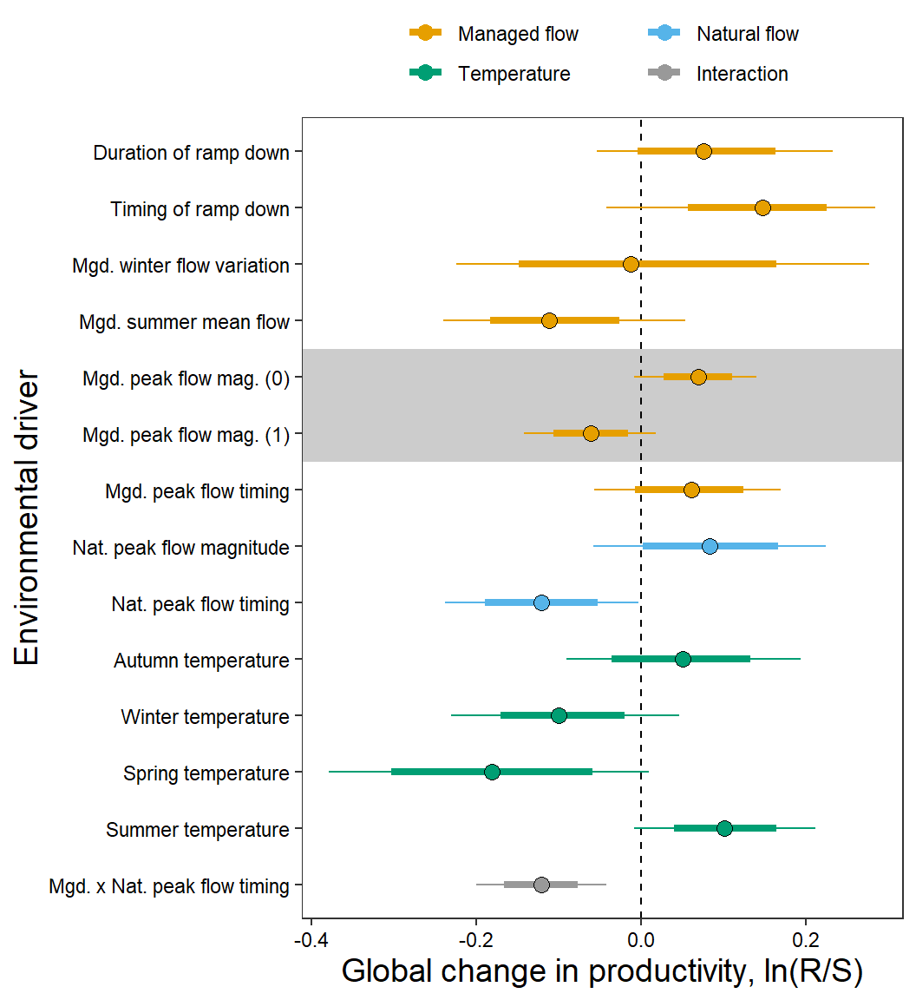
# test <- ggs_caterpillar(D = mod.gg, family = "mu.coef", thick_ci = c(0.125, 0.875), thin_ci = c(0.025, 0.975), sort = FALSE)
# test +
# theme_bw() +
# ylab("Environmental driver") +
# xlab("Global change in productivity, ln(R/S)") +
# aes(color = CovType) +
# scale_color_manual(values = mycols) +
# geom_rect(aes(xmin = -Inf, xmax = Inf, ymin = 8.5, ymax = 10.5), fill = "grey80", color = NA) +
# geom_vline(xintercept = 0, linetype = "dashed") +
# #scale_y_discrete(labels = rev(names.covars.new), limits = rev) +
# theme(legend.position = "top", legend.title = element_blank(), axis.text = element_text(color = "black"),
# legend.key.spacing.y = unit(0, "cm"), legend.key.spacing.x = unit(1, "cm"), legend.margin = margin(0,0,0,0),
# panel.grid = element_blank(), axis.title = element_text(size = 14)) +
# guides(color = guide_legend(nrow = 2, byrow = TRUE)) +
# geom_point(data = test$data, aes(x = median, y = Parameter), size = 3) +
# geom_errorbarh(data = test$data, aes(xmin = Low, xmax = High), size = 1.5, height = 0) +
# geom_errorbarh(data = test$data, aes(xmin = low, xmax = high), height = 0) +
# geom_point(data = test$data, aes(x = median, y = Parameter), size = 3, shape = 1, color = "black")Define colors
mycols2 <- c(rep(mycols[1], times = 7), rep(mycols[2], times = 2),
rep(mycols[3], times = 4), rep(mycols[4], times = 1))Generate plots in a for loop
# generate plots in a for loop
for (i in 1:length(names.covars0)) {
test <- ggs_caterpillar(D = mod.gg %>% filter(Parameter %in% paste("coef[", 1:16, ",", i, "]", sep = "")), family = "coef", thick_ci = c(0.125, 0.875), thin_ci = c(0.025, 0.975), sort = FALSE)
jpeg(paste("Figures/Dot Plots/Pop Level Covariate Effects/ReddCounts_Ricker_CovarModel_DotPlot_Covs", i, "_", names.covars0[i], ".jpg", sep = ""), units = "in", width = 5, height = 5, res = 1500)
print(test +
theme_bw() +
ylab("") + xlab("Change in productivity") + ggtitle(names.covars.new[i]) +
scale_y_discrete(labels = rev(popshort[c(1,10,11,12,13,2,3,4,5,6,7,8,9)]), limits = rev) +
geom_vline(xintercept = 0, linetype = "solid", size = 0.2) +
geom_point(data = test$data, aes(x = median, y = Parameter), size = 3) +
geom_point(data = test$data, aes(x = median, y = Parameter), size = 3, shape = 1, color = "black") +
aes(color = CovType[i]) + scale_color_manual(values = mycols2[i]) +
theme(legend.position = "none", plot.title = element_text(hjust = 0.5),
axis.text = element_text(color = "black"), panel.grid = element_blank()))
dev.off()
}Combined plot
covplots <- list()
for (i in 1:length(names.covars0)) {
test <- ggs_caterpillar(D = mod.gg %>% filter(Parameter %in% paste("coef[", 1:16, ",", i, "]", sep = "")), family = "coef", thick_ci = c(0.125, 0.875), thin_ci = c(0.025, 0.975), sort = FALSE)
p1 <- eval(substitute(test +
theme_bw() + xlim(-0.55, 0.49) +
ylab("") + xlab("") + ggtitle(names.covars.new[i]) +
geom_vline(xintercept = 0, linetype = "solid", size = 0.2) +
geom_point(data = test$data, aes(x = median, y = Parameter), size = 3) +
geom_point(data = test$data, aes(x = median, y = Parameter), size = 3, shape = 1, color = "black") +
scale_y_discrete(labels = rev(popshort[c(1,10,11,12,13,2,3,4,5,6,7,8,9)]), limits = rev) +
aes(color = CovType[i]) + scale_color_manual(values = mycols2[i]) +
theme(legend.position = "none", plot.margin = unit(c(0.1,0.1,-0.7,-0.5), 'lines'),
plot.title = element_text(vjust = -0.5, hjust = 0.5),
axis.text = element_text(color = "black"), panel.grid = element_blank()), list(i = i)))
covplots[[i]] <- p1
}
myfig <- annotate_figure(ggarrange(plotlist = covplots, ncol = 4, nrow = 4),
left = text_grob("Population", size = 16, rot = 90),
bottom = text_grob("Change in productivity, ln(R/S)", size = 16))
myfig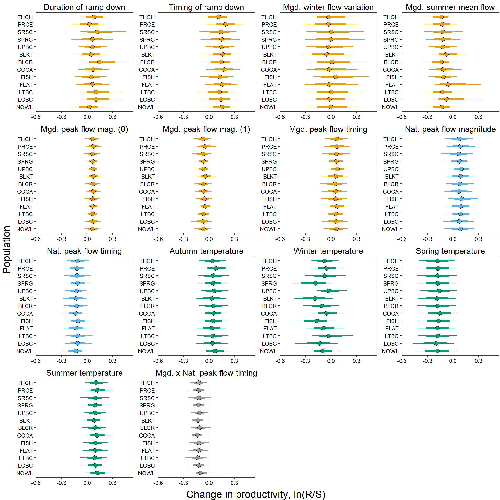
test <- ggs_caterpillar(mod.gg %>%
filter(Parameter %in% grep("sigma.coef", unique(mod.gg$Parameter), value = TRUE)) %>%
mutate(Parameter = factor(Parameter, levels = c("sigma.coef[1]", "sigma.coef[2]", "sigma.coef[3]", "sigma.coef[4]", "sigma.coef[5]", "sigma.coef[6]", "sigma.coef[7]", "sigma.coef[8]", "sigma.coef[9]", "sigma.coef[10]", "sigma.coef[11]", "sigma.coef[12]", "sigma.coef[13]", "sigma.coef[14]"))),
thick_ci = c(0.125, 0.875), thin_ci = c(0.025, 0.975), sort = FALSE)
test +
theme_bw() +
ylab("Environmental driver") + xlab("Population-level variation in covariate effect") +
aes(color = CovType) + scale_color_manual(values = mycols) +
#geom_vline(xintercept = 0, linetype = "solid", size = 0.2) +
geom_point(data = test$data, aes(x = median, y = Parameter), size = 3, shape = 1, color = "black") +
scale_y_discrete(labels = rev(names.covars.new), limits = rev) +
theme(legend.position = "top") + theme(legend.title = element_blank(), axis.text = element_text(color = "black"),
legend.key.spacing.y = unit(0, "cm"), legend.key.spacing.x = unit(1, "cm"), legend.margin = margin(0,0,0,0),
panel.grid = element_blank()) +
guides(color = guide_legend(nrow = 2, byrow = TRUE))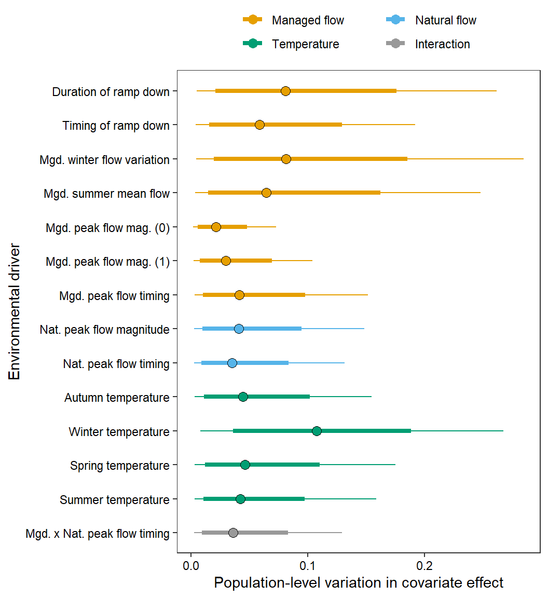
as_tibble(Mcmcdat[, c("p[1]", "p[2]", "p[3]", "p[4]", "p[7]", "p[8]", "p[9]",
"p[10]", "p[11]", "p[12]", "p[13]", "p[14]")]) %>%
gather(key = "param", value = "value") %>% mutate(param = fct_rev(as_factor(param))) %>%
ggplot(aes(x = value, y = param, height = stat(density), fill = param)) +
geom_density_ridges(scale = 1.3, stat = "density", alpha = 0.8) +
scale_fill_manual(values = rev(mycols2[-c(5:6)])) + scale_y_discrete(labels = rev(names.covars.new[-c(5:6)]), expand = expand_scale(mult = c(0.01, .07))) +
ylab("Environmental driver") + xlab(expression(paste("Proportional effect at age-0 vs. age-1 (", rho, ")"))) +
theme_bw() + theme(legend.position = "none", axis.text = element_text(color = "black"),
legend.key.spacing.y = unit(0, "cm"), legend.key.spacing.x = unit(1, "cm"), legend.margin = margin(0,0,0,0), panel.grid = element_blank()) +
guides(color = guide_legend(nrow = 2, byrow = TRUE))
# same but plot as density/ridgelines
mycols2 <- c(mycols[1], mycols[1], mycols[1], mycols[1], mycols[1], mycols[1], mycols[1], mycols[2], mycols[2], mycols[3], mycols[3], mycols[3], mycols[3], mycols[4])
# mycols2 <- c("darkorange", "darkorange", bls[3], bls[3], bls[3], bls[3], bls[1], bls[1], "seagreen", "seagreen", "seagreen", "seagreen", "grey50", "grey50")
jpeg("Figures/Dot Plots/ReddCounts_Ricker_CovarModel_DensityPlot_ProportionalCov.jpg", units = "in", width = 5, height = 5.5, res = 1500)
as_tibble(Mcmcdat[, c("p[1]", "p[2]", "p[3]", "p[4]", "p[7]", "p[8]", "p[9]",
"p[10]", "p[11]", "p[12]", "p[13]", "p[14]")]) %>%
gather(key = "param", value = "value") %>% mutate(param = fct_rev(as_factor(param))) %>%
ggplot(aes(x = value, y = param, height = stat(density), fill = param)) +
geom_density_ridges(scale = 1.3, stat = "density", alpha = 0.8) +
scale_fill_manual(values = rev(mycols2[-c(5:6)])) + scale_y_discrete(labels = rev(names.covars.new[-c(5:6)]), expand = expand_scale(mult = c(0.01, .07))) +
ylab("Environmental driver") + xlab(expression(paste("Proportional effect at age-0 vs. age-1 (", rho, ")"))) +
theme_bw() + theme(legend.position = "none", axis.text = element_text(color = "black"),
legend.key.spacing.y = unit(0, "cm"), legend.key.spacing.x = unit(1, "cm"), legend.margin = margin(0,0,0,0), panel.grid = element_blank()) +
guides(color = guide_legend(nrow = 2, byrow = TRUE))
dev.off()png
2 ggs_caterpillar(mod.gg %>%
filter(Parameter %in% paste("A[", 1:13, "]", sep = "")) %>%
mutate(Parameter = factor(Parameter, levels = c("A[1]", "A[2]", "A[3]", "A[4]", "A[5]", "A[6]", "A[7]", "A[8]", "A[9]", "A[10]", "A[11]", "A[12]", "A[13]"))),
family = "A", thick_ci = c(0.125, 0.875), thin_ci = c(0.025, 0.975), sort = FALSE) +
theme_bw() +
theme(axis.text = element_text(color = "black"), panel.grid = element_blank()) +
ylab("Population") + xlab("Ricker a") +
scale_y_discrete(labels = rev(popshort), limits = rev)ggs_caterpillar(mod.gg %>%
filter(Parameter %in% paste("B[", 1:13, "]", sep = "")) %>%
mutate(Parameter = factor(Parameter, levels = c("B[1]", "B[2]", "B[3]", "B[4]", "B[5]", "B[6]", "B[7]", "B[8]", "B[9]", "B[10]", "B[11]", "B[12]", "B[13]"))),
family = "B", thick_ci = c(0.125, 0.875), thin_ci = c(0.025, 0.975), sort = FALSE) + theme_bw() + theme(axis.text = element_text(color = "black"), panel.grid = element_blank()) + ylab("Population") + xlab("Ricker b") + scale_y_discrete(labels = rev(popshort), limits = rev)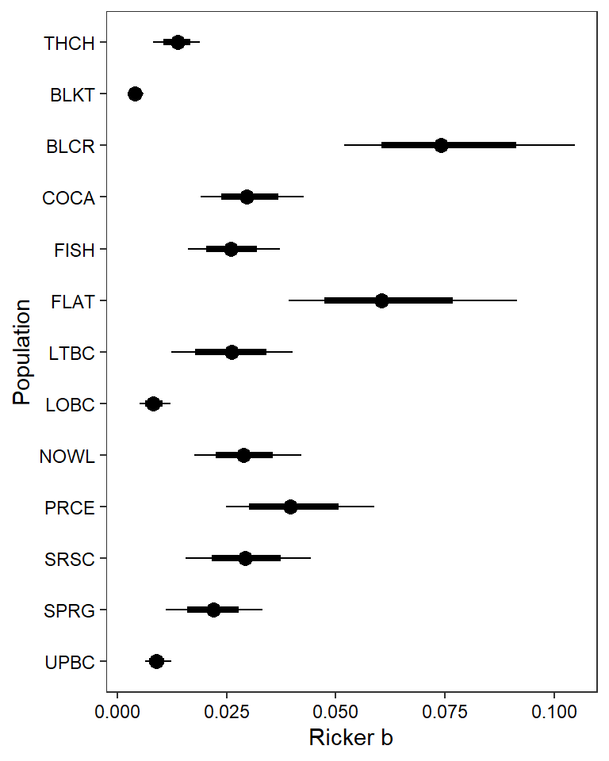
ggs_caterpillar(D = mod.gg, family = "sigma.oe", thick_ci = c(0.125, 0.875), thin_ci = c(0.025, 0.975), sort = FALSE) +
theme_bw() + theme(axis.text = element_text(color = "black"), panel.grid = element_blank()) + ylab("") + xlab("Observation error") + scale_y_discrete(labels = "Global")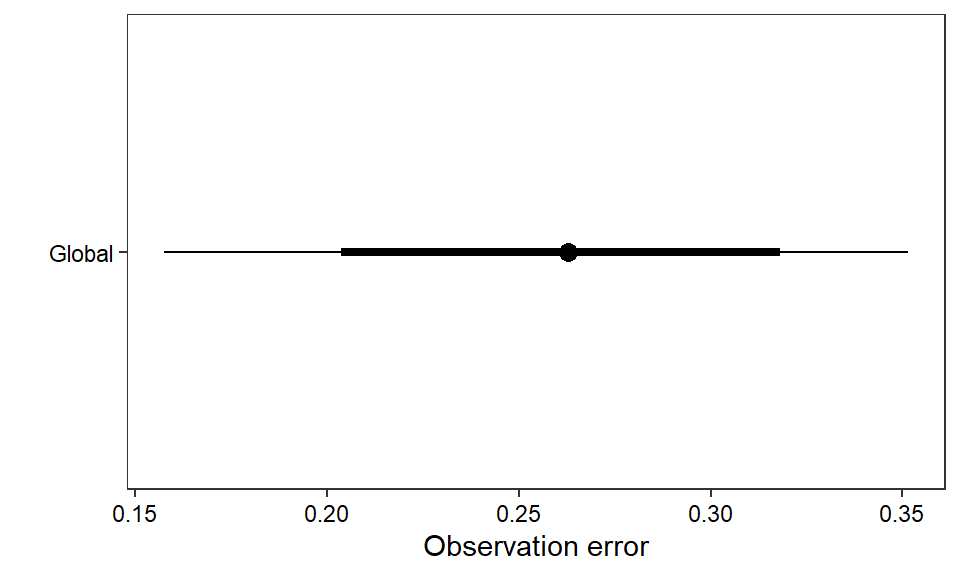
ggs_caterpillar(mod.gg %>%
filter(Parameter %in% paste("sigma.pe[", 1:13, "]", sep = "")) %>%
mutate(Parameter = factor(Parameter, levels = c("sigma.pe[1]", "sigma.pe[2]", "sigma.pe[3]", "sigma.pe[4]", "sigma.pe[5]", "sigma.pe[6]", "sigma.pe[7]", "sigma.pe[8]", "sigma.pe[9]", "sigma.pe[10]", "sigma.pe[11]", "sigma.pe[12]", "sigma.pe[13]"))),
thick_ci = c(0.125, 0.875), thin_ci = c(0.025, 0.975), sort = FALSE) +
theme_bw() + theme(axis.text = element_text(color = "black"), panel.grid = element_blank()) + ylab("Population") + xlab("Process error") + scale_y_discrete(labels = rev(popshort), limits = rev)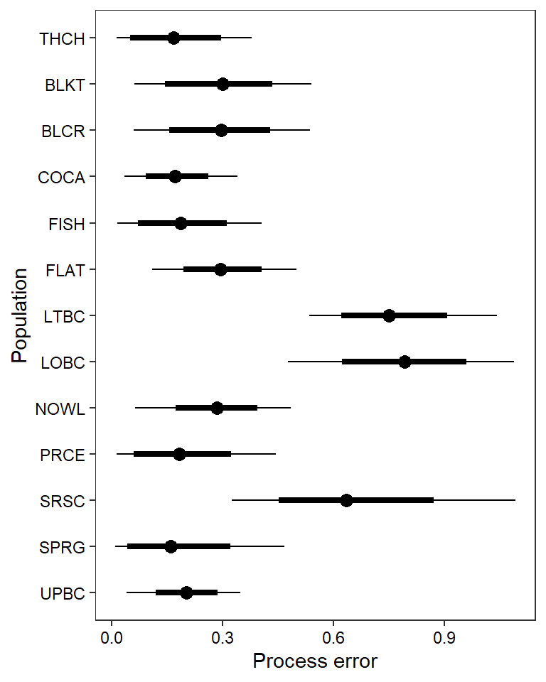
ggs_caterpillar(mod.gg %>%
filter(Parameter %in% paste("K[", 1:13, "]", sep = "")) %>%
mutate(Parameter = factor(Parameter, levels = c("K[1]", "K[2]", "K[3]", "K[4]", "K[5]", "K[6]", "K[7]", "K[8]", "K[9]", "K[10]", "K[11]", "K[12]", "K[13]"))),
thick_ci = c(0.125, 0.875), thin_ci = c(0.025, 0.975), sort = FALSE) +
theme_bw() + theme(axis.text = element_text(color = "black"), panel.grid = element_blank()) + ylab("Population") + xlab("Carrying capacity (redds / km)") + scale_y_discrete(labels = rev(popshort), limits = rev)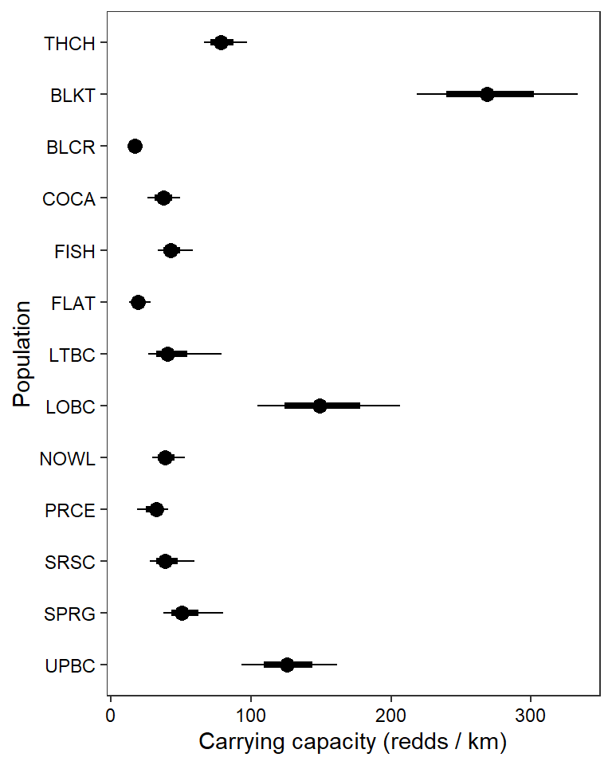
ggs_caterpillar(D = mod.gg, family = "sigma.A", thick_ci = c(0.125, 0.875), thin_ci = c(0.025, 0.975), sort = FALSE) +
theme_bw() + theme(axis.text = element_text(color = "black"), panel.grid = element_blank()) + ylab("") + xlab("") + geom_vline(xintercept = 0, linetype = "dashed") 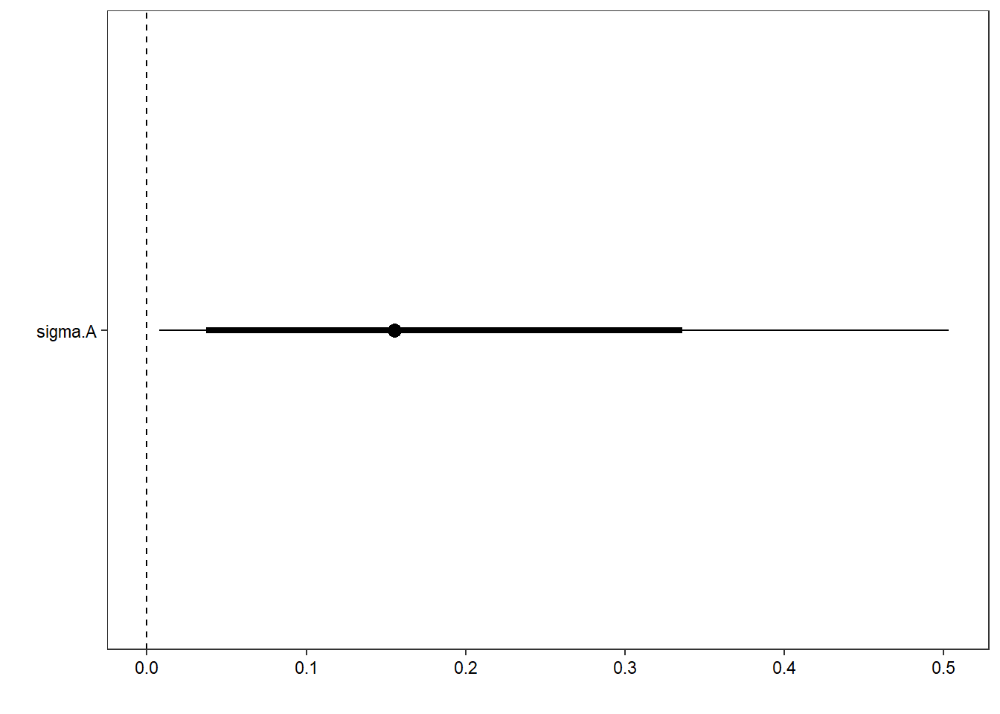
Load in covariate mean/SD summaries, to transform axes to real scale
covsrc_jldq_summary <- read_csv("Data/Derived/ManagedFlow_SummaryMeanSD_1967-2022.csv")
covsrc_natq_summary <- read_csv("Data/Derived/NaturalFlow_SummaryMeanSD_1975-2022.csv")
covsrc_expq_summary <- read_csv("Data/Derived/ExperiencedFlow_SummaryMeanSD_1975-2022.csv")
covsrc_temp_summary <- read_csv("Data/Derived/Temperature_SummaryMeanSD_1967-2022.csv")
covsummary <- rbind(covsrc_jldq_summary[c(1,2,6,8:10),], covsrc_natq_summary[c(6:7),], covsrc_temp_summary)
covsummary# A tibble: 12 × 7
cov mean sd min_raw max_raw min_zscore max_zscore
<chr> <dbl> <dbl> <dbl> <dbl> <dbl> <dbl>
1 z_jld_rampdur 1.00e+1 5.71e+0 3 e+0 3.1 e+1 -1.23 3.67
2 z_jld_rampratemindoy 2.70e+2 7.92e+0 2.52e+2 2.8 e+2 -2.33 1.21
3 z_jld_winvar 4.31e-2 6.49e-2 3.07e-3 3.20e-1 -0.617 4.26
4 z_jld_summean 2.70e+3 8.38e+2 1.26e+3 4.62e+3 -1.72 2.29
5 z_jld_peakmag 5.88e+3 1.92e+3 2.85e+3 1.17e+4 -1.58 3.03
6 z_jld_peaktime 2.86e+2 1.59e+1 2.35e+2 3.21e+2 -3.20 2.19
7 z_natq_peakmag 1.09e+4 3.60e+3 4.34e+3 1.96e+4 -1.83 2.40
8 z_natq_peaktime 2.78e+2 1.19e+1 2.52e+2 3.04e+2 -2.16 2.22
9 z_temp_falmean 4.05e+0 1.04e+0 1.37e+0 6.27e+0 -2.57 2.13
10 z_temp_winmean -9.29e+0 1.80e+0 -1.38e+1 -5.76e+0 -2.51 1.96
11 z_temp_sprmean 2.38e+0 1.30e+0 -6.37e-1 5.41e+0 -2.32 2.34
12 z_temp_summean 1.48e+1 1.14e+0 1.14e+1 1.75e+1 -3.02 2.32Values for prediction and color palettes
nvalues <- 100
colPal <- hcl.colors(length(pops), "Spectral")Create and store plots in list
plotlist <- list()
# 1. duration of ramp down
x1 <- seq(from = min(dat$z_jld_rampdur), to = max(dat$z_jld_rampdur), length.out = nvalues)
# axes
x.axis <- seq(from = 5, to = 30, by = 5)
x.axis.scaled <- (x.axis - covsummary$mean[1]) / covsummary$sd[1]
# predictions
pred <- matrix(NA, nrow = nrow(Mcmcdat), ncol = nvalues)
for (j in 1:nrow(pred)) { pred[j,] <- Mcmcdat[j,"mu.A"] + Mcmcdat[j,"mu.coef[1]"]*x1 }
pred_median <- apply(pred, MARGIN = 2, quantile, prob = 0.50)
pred_025 <- apply(pred, MARGIN = 2, quantile, prob = 0.025)
pred_125 <- apply(pred, MARGIN = 2, quantile, prob = 0.125)
pred_875 <- apply(pred, MARGIN = 2, quantile, prob = 0.875)
pred_975 <- apply(pred, MARGIN = 2, quantile, prob = 0.975)
# store in tibble
mytib <- tibble(x1 = x1, pred_median = pred_median, pred_025 = pred_025, pred_125 = pred_125, pred_875 = pred_875, pred_975 = pred_975)
# plot
plotlist[[1]] <- eval(substitute(ggplot(mytib, aes(x = x1, y = pred_median)) +
geom_ribbon(aes(ymin = pred_025, ymax = pred_975), fill = "grey85") +
geom_ribbon(aes(ymin = pred_125, ymax = pred_875), fill = "grey70") +
geom_hline(yintercept = param.summary["mu.A",5], linetype = "dashed", color = "grey40") +
geom_vline(xintercept = 0, linetype = "dashed", color = "grey40") +
annotate("text", x = 0.1, y = 0.3, label = "10", color = "grey40", hjust = 0, vjust = 0.5) +
geom_line(linewidth = 1.2, lineend = "round") +
coord_cartesian(ylim = c(0.3,2)) +
scale_x_continuous(breaks = x.axis.scaled, labels = x.axis) +
xlab("Duration of ramp down (days)") + ylab("Productivity, ln(R/S)") +
theme_bw() +
theme(panel.grid = element_blank(), axis.text = element_text(color = "black"),
panel.border = element_rect(color = mycols2[1], fill = NA, linewidth = 2))))
# 2. timing of ramp down
x1 <- seq(from = min(dat$z_jld_rampratemindoy), to = max(dat$z_jld_rampratemindoy), length.out = nvalues)
# axes
x.axis <- c(254,264,274)
x.axis.scaled <- (x.axis - covsummary$mean[2]) / covsummary$sd[2]
# predictions
pred <- matrix(NA, nrow = nrow(Mcmcdat), ncol = nvalues)
for (j in 1:nrow(pred)) { pred[j,] <- Mcmcdat[j,"mu.A"] + Mcmcdat[j,"mu.coef[2]"]*x1 }
pred_median <- apply(pred, MARGIN = 2, quantile, prob = 0.50)
pred_025 <- apply(pred, MARGIN = 2, quantile, prob = 0.025)
pred_125 <- apply(pred, MARGIN = 2, quantile, prob = 0.125)
pred_875 <- apply(pred, MARGIN = 2, quantile, prob = 0.875)
pred_975 <- apply(pred, MARGIN = 2, quantile, prob = 0.975)
# store in tibble
mytib <- tibble(x1 = x1, pred_median = pred_median, pred_025 = pred_025, pred_125 = pred_125, pred_875 = pred_875, pred_975 = pred_975)
# plot
plotlist[[2]] <- eval(substitute(ggplot(mytib, aes(x = x1, y = pred_median)) +
geom_ribbon(aes(ymin = pred_025, ymax = pred_975), fill = "grey85") +
geom_ribbon(aes(ymin = pred_125, ymax = pred_875), fill = "grey70") +
geom_hline(yintercept = param.summary["mu.A",5], linetype = "dashed", color = "grey40") +
geom_vline(xintercept = 0, linetype = "dashed", color = "grey40") +
annotate("text", x = 0.1, y = 0.3, label = "26 Sept", color = "grey40", hjust = 0, vjust = 0.5) +
geom_line(linewidth = 1.2, lineend = "round") +
coord_cartesian(ylim = c(0.3,2)) +
scale_x_continuous(breaks = x.axis.scaled, labels = c("10 Sept", "20 Sept", "30 Sept")) +
xlab("Timing of ramp down") + ylab("Productivity, ln(R/S)") +
theme_bw() +
theme(panel.grid = element_blank(), axis.text = element_text(color = "black"),
panel.border = element_rect(color = mycols2[2], fill = NA, linewidth = 2))))
# 3. Mgd. winter flow variation
x1 <- seq(from = min(dat$z_jld_winvar, na.rm = TRUE), to = max(dat$z_jld_winvar, na.rm = TRUE), length.out = nvalues)
# axes
x.axis <- seq(from = 0, to = 0.3, by = 0.05)
x.axis.scaled <- (x.axis - covsummary$mean[3]) / covsummary$sd[3]
# predictions
pred <- matrix(NA, nrow = nrow(Mcmcdat), ncol = nvalues)
for (j in 1:nrow(pred)) { pred[j,] <- Mcmcdat[j,"mu.A"] + Mcmcdat[j,"mu.coef[3]"]*x1 }
pred_median <- apply(pred, MARGIN = 2, quantile, prob = 0.50)
pred_025 <- apply(pred, MARGIN = 2, quantile, prob = 0.025)
pred_125 <- apply(pred, MARGIN = 2, quantile, prob = 0.225)
pred_875 <- apply(pred, MARGIN = 2, quantile, prob = 0.875)
pred_975 <- apply(pred, MARGIN = 2, quantile, prob = 0.975)
# store in tibble
mytib <- tibble(x1 = x1, pred_median = pred_median, pred_025 = pred_025, pred_125 = pred_125, pred_875 = pred_875, pred_975 = pred_975)
# plot
plotlist[[3]] <- eval(substitute(ggplot(mytib, aes(x = x1, y = pred_median)) +
geom_ribbon(aes(ymin = pred_025, ymax = pred_975), fill = "grey85") +
geom_ribbon(aes(ymin = pred_125, ymax = pred_875), fill = "grey70") +
geom_hline(yintercept = param.summary["mu.A",5], linetype = "dashed", color = "grey40") +
geom_vline(xintercept = 0, linetype = "dashed", color = "grey40") +
annotate("text", x = 0.1, y = 0.3, label = "0.043", color = "grey40", hjust = 0, vjust = 0.5) +
geom_line(linewidth = 1.2, lineend = "round") +
coord_cartesian(ylim = c(0.3,2)) +
scale_x_continuous(breaks = x.axis.scaled, labels = c("0.00", "0.05", "0.10", "0.15", "0.20", "0.25", "0.30")) +
xlab("Mgd. winter flow variation") + ylab("Productivity, ln(R/S)") +
theme_bw() +
theme(panel.grid = element_blank(), axis.text = element_text(color = "black"),
panel.border = element_rect(color = mycols2[3], fill = NA, linewidth = 2))))
# 4. Mgd. summer flow
x1 <- seq(from = min(dat$z_jld_summean, na.rm = TRUE), to = max(dat$z_jld_summean, na.rm = TRUE), length.out = nvalues)
# axes
x.axis <- seq(from = 1500, to = 4500, by = 1000)
x.axis.scaled <- (x.axis - covsummary$mean[4]) / covsummary$sd[4]
# predictions
pred <- matrix(NA, nrow = nrow(Mcmcdat), ncol = nvalues)
for (j in 1:nrow(pred)) { pred[j,] <- Mcmcdat[j,"mu.A"] + Mcmcdat[j,"mu.coef[4]"]*x1 }
pred_median <- apply(pred, MARGIN = 2, quantile, prob = 0.50)
pred_025 <- apply(pred, MARGIN = 2, quantile, prob = 0.025)
pred_125 <- apply(pred, MARGIN = 2, quantile, prob = 0.125)
pred_875 <- apply(pred, MARGIN = 2, quantile, prob = 0.875)
pred_975 <- apply(pred, MARGIN = 2, quantile, prob = 0.975)
# store in tibble
mytib <- tibble(x1 = x1, pred_median = pred_median, pred_025 = pred_025, pred_125 = pred_125, pred_875 = pred_875, pred_975 = pred_975)
# plot
plotlist[[4]] <- eval(substitute(ggplot(mytib, aes(x = x1, y = pred_median)) +
geom_ribbon(aes(ymin = pred_025, ymax = pred_975), fill = "grey85") +
geom_ribbon(aes(ymin = pred_125, ymax = pred_875), fill = "grey70") +
geom_hline(yintercept = param.summary["mu.A",5], linetype = "dashed", color = "grey40") +
geom_vline(xintercept = 0, linetype = "dashed", color = "grey40") +
annotate("text", x = 0.1, y = 0.3, label = "2700", color = "grey40", hjust = 0, vjust = 0.5) +
geom_line(linewidth = 1.2, lineend = "round") +
coord_cartesian(ylim = c(0.3,2)) +
scale_x_continuous(breaks = x.axis.scaled, labels = x.axis) +
xlab("Mgd. summer mean flow (cfs)") + ylab("Productivity, ln(R/S)") +
theme_bw() +
theme(panel.grid = element_blank(), axis.text = element_text(color = "black"),
panel.border = element_rect(color = mycols2[4], fill = NA, linewidth = 2))))
# 5. Mgd. peak flow magnitude, age-0
x1 <- seq(from = min(dat$z_jld_peakmag, na.rm = TRUE), to = max(dat$z_jld_peakmag, na.rm = TRUE), length.out = nvalues)
plot(seq(from = 0.3, to = 2, length.out = nvalues) ~ x1, pch = NA, bty = "l", xlab = "Mgd. peak flow magnitude, age-0 (cfs)", ylab = "Productivity, ln(R/S)", axes = F)
# axes and box
x.axis <- seq(from = 4000, to = 12000, by = 2000)
x.axis.scaled <- (x.axis - covsummary$mean[5]) / covsummary$sd[5]
# predictions
pred <- matrix(NA, nrow = nrow(Mcmcdat), ncol = nvalues)
for (j in 1:nrow(pred)) { pred[j,] <- Mcmcdat[j,"mu.A"] + Mcmcdat[j,"mu.coef[5]"]*x1 }
pred_median <- apply(pred, MARGIN = 2, quantile, prob = 0.50)
pred_025 <- apply(pred, MARGIN = 2, quantile, prob = 0.025)
pred_125 <- apply(pred, MARGIN = 2, quantile, prob = 0.125)
pred_875 <- apply(pred, MARGIN = 2, quantile, prob = 0.875)
pred_975 <- apply(pred, MARGIN = 2, quantile, prob = 0.975)
## store in tibble
mytib <- tibble(x1 = x1, pred_median = pred_median, pred_025 = pred_025, pred_125 = pred_125, pred_875 = pred_875, pred_975 = pred_975)
## plot
plotlist[[5]] <- eval(substitute(ggplot(mytib, aes(x = x1, y = pred_median)) +
geom_ribbon(aes(ymin = pred_025, ymax = pred_975), fill = "grey85") +
geom_ribbon(aes(ymin = pred_125, ymax = pred_875), fill = "grey70") +
geom_hline(yintercept = param.summary["mu.A",5], linetype = "dashed", color = "grey40") +
geom_vline(xintercept = 0, linetype = "dashed", color = "grey40") +
annotate("text", x = 0.1, y = 0.3, label = "5884", color = "grey40", hjust = 0, vjust = 0.5) +
geom_line(linewidth = 1.2, lineend = "round") +
coord_cartesian(ylim = c(0.3,2)) +
scale_x_continuous(breaks = x.axis.scaled, labels = round(x.axis, digits = 0)) +
xlab("Mgd. peak flow magnitude, age-0 (cfs)") + ylab("Productivity, ln(R/S)") +
theme_bw() +
theme(panel.grid = element_blank(), axis.text = element_text(color = "black"),
panel.border = element_rect(color = mycols2[5], fill = NA, linewidth = 2))))
# 6. Mgd. peak flow magnitude, age-1
x1 <- seq(from = min(dat$z_jld_peakmag, na.rm = TRUE), to = max(dat$z_jld_peakmag, na.rm = TRUE), length.out = nvalues)
# axes and box
x.axis <- seq(from = 4000, to = 12000, by = 2000)
x.axis.scaled <- (x.axis - covsummary$mean[5]) / covsummary$sd[5]
# predictions
pred <- matrix(NA, nrow = nrow(Mcmcdat), ncol = nvalues)
for (j in 1:nrow(pred)) { pred[j,] <- Mcmcdat[j,"mu.A"] + Mcmcdat[j,"mu.coef[6]"]*x1 }
pred_median <- apply(pred, MARGIN = 2, quantile, prob = 0.50)
pred_025 <- apply(pred, MARGIN = 2, quantile, prob = 0.025)
pred_125 <- apply(pred, MARGIN = 2, quantile, prob = 0.125)
pred_875 <- apply(pred, MARGIN = 2, quantile, prob = 0.875)
pred_975 <- apply(pred, MARGIN = 2, quantile, prob = 0.975)
## store in tibble
mytib <- tibble(x1 = x1, pred_median = pred_median, pred_025 = pred_025, pred_125 = pred_125, pred_875 = pred_875, pred_975 = pred_975)
## plot
plotlist[[6]] <- eval(substitute(ggplot(mytib, aes(x = x1, y = pred_median)) +
geom_ribbon(aes(ymin = pred_025, ymax = pred_975), fill = "grey85") +
geom_ribbon(aes(ymin = pred_125, ymax = pred_875), fill = "grey70") +
geom_hline(yintercept = param.summary["mu.A",5], linetype = "dashed", color = "grey40") +
geom_vline(xintercept = 0, linetype = "dashed", color = "grey40") +
annotate("text", x = 0.1, y = 0.3, label = "5884", color = "grey40", hjust = 0, vjust = 0.5) +
geom_line(linewidth = 1.2, lineend = "round") +
coord_cartesian(ylim = c(0.3,2)) +
scale_x_continuous(breaks = x.axis.scaled, labels = round(x.axis, digits = 0)) +
xlab("Mgd. peak flow magnitude, age-1 (cfs)") + ylab("Productivity, ln(R/S)") +
theme_bw() +
theme(panel.grid = element_blank(), axis.text = element_text(color = "black"),
panel.border = element_rect(color = mycols2[6], fill = NA, linewidth = 2))))
# 7. Mgd. peak flow timing
x1 <- seq(from = min(dat$z_jld_peaktime, na.rm = TRUE), to = max(dat$z_jld_peaktime, na.rm = TRUE), length.out = nvalues)
# axes and box
x.axis <- c(242, 273, 303)
x.axis.scaled <- (x.axis - covsummary$mean[6]) / covsummary$sd[6]
# predictions (primary effect)
pred <- matrix(NA, nrow = nrow(Mcmcdat), ncol = nvalues)
for (j in 1:nrow(pred)) { pred[j,] <- Mcmcdat[j,"mu.A"] + Mcmcdat[j,"mu.coef[7]"]*x1 }
pred_median <- apply(pred, MARGIN = 2, quantile, prob = 0.50)
pred_025 <- apply(pred, MARGIN = 2, quantile, prob = 0.025)
pred_125 <- apply(pred, MARGIN = 2, quantile, prob = 0.125)
pred_875 <- apply(pred, MARGIN = 2, quantile, prob = 0.875)
pred_975 <- apply(pred, MARGIN = 2, quantile, prob = 0.975)
# interaction with natural peak timing
## minimum
pred <- matrix(NA, nrow = nrow(Mcmcdat), ncol = nvalues)
for (j in 1:nrow(pred)) { pred[j,] <- Mcmcdat[j,"mu.A"] + Mcmcdat[j,"mu.coef[7]"]*x1 + Mcmcdat[j,"mu.coef[9]"]*min(dat$z_natq_peaktime, na.rm = T) + Mcmcdat[j,"mu.coef[14]"]*x1*min(dat$z_natq_peaktime, na.rm = T) }
pred_median_min <- apply(pred, MARGIN = 2, quantile, prob = 0.50)
## maximum
pred <- matrix(NA, nrow = nrow(Mcmcdat), ncol = nvalues)
for (j in 1:nrow(pred)) { pred[j,] <- Mcmcdat[j,"mu.A"] + Mcmcdat[j,"mu.coef[7]"]*x1 + Mcmcdat[j,"mu.coef[9]"]*max(dat$z_natq_peaktime, na.rm = T) + Mcmcdat[j,"mu.coef[14]"]*x1*max(dat$z_natq_peaktime, na.rm = T) }
pred_median_max <- apply(pred, MARGIN = 2, quantile, prob = 0.50)
## store in tibble
mytib <- tibble(x1 = x1, pred_median = pred_median, pred_025 = pred_025, pred_125 = pred_125, pred_875 = pred_875, pred_975 = pred_975)
mytib_int <- tibble(x1 = x1, pred_median_min = pred_median_min, pred_median_max = pred_median_max) %>% gather("type", "effect", pred_median_min:pred_median_max) %>% mutate(type = as.factor(recode(type, pred_median_min = "Min. nat. peak timing", pred_median_max = "Max. nat. peak timing")))
## plot
plotlist[[7]] <- eval(substitute(ggplot(mytib, aes(x = x1, y = pred_median)) +
geom_ribbon(aes(ymin = pred_025, ymax = pred_975), fill = "grey85") +
geom_ribbon(aes(ymin = pred_125, ymax = pred_875), fill = "grey70") +
geom_hline(yintercept = param.summary["mu.A",5], linetype = "dashed", color = "grey40") +
geom_vline(xintercept = 0, linetype = "dashed", color = "grey40") +
annotate("text", x = 0.1, y = 0.3, label = "14 June", color = "grey40", hjust = 0, vjust = 0.5) +
geom_line(linewidth = 1.2, lineend = "round") +
geom_line(data = mytib_int, aes(x = x1, y = effect, linetype = type), size = 1) +
scale_linetype_manual(values = c("dashed", "dotted")) +
coord_cartesian(ylim = c(0.3,2)) +
scale_x_continuous(breaks = x.axis.scaled, labels = c("1 May", "1 June", "1 July")) +
xlab("Mgd. peak flow timing") + ylab("Productivity, ln(R/S)") +
theme_bw() +
theme(panel.grid = element_blank(), axis.text = element_text(color = "black"),
panel.border = element_rect(color = mycols2[6], fill = NA, linewidth = 2),
legend.position = "inside", legend.position.inside = c(0.15,0.9), legend.title = element_blank())))
# 8. Nat. peak flow magnitude
x1 <- seq(from = min(dat$z_natq_peakmag, na.rm = TRUE), to = max(dat$z_natq_peakmag, na.rm = TRUE), length.out = nvalues)
# range(dat$natq_peakmag, na.rm = T)
x.axis <- seq(from = 5000, to = 20000, by = 5000)
x.axis.scaled <- (x.axis - covsummary$mean[7]) / covsummary$sd[7]
# predictions
pred <- matrix(NA, nrow = nrow(Mcmcdat), ncol = nvalues)
for (j in 1:nrow(pred)) { pred[j,] <- Mcmcdat[j,"mu.A"] + Mcmcdat[j,"mu.coef[8]"]*x1 }
pred_median <- apply(pred, MARGIN = 2, quantile, prob = 0.50)
pred_025 <- apply(pred, MARGIN = 2, quantile, prob = 0.025)
pred_125 <- apply(pred, MARGIN = 2, quantile, prob = 0.125)
pred_875 <- apply(pred, MARGIN = 2, quantile, prob = 0.875)
pred_975 <- apply(pred, MARGIN = 2, quantile, prob = 0.975)
## store in tibble
mytib <- tibble(x1 = x1, pred_median = pred_median, pred_025 = pred_025, pred_125 = pred_125, pred_875 = pred_875, pred_975 = pred_975)
## plot
plotlist[[8]] <- eval(substitute(ggplot(mytib, aes(x = x1, y = pred_median)) +
geom_ribbon(aes(ymin = pred_025, ymax = pred_975), fill = "grey85") +
geom_ribbon(aes(ymin = pred_125, ymax = pred_875), fill = "grey70") +
geom_hline(yintercept = param.summary["mu.A",5], linetype = "dashed", color = "grey40") +
geom_vline(xintercept = 0, linetype = "dashed", color = "grey40") +
annotate("text", x = 0.1, y = 0.3, label = "10948", color = "grey40", hjust = 0, vjust = 0.5) +
geom_line(linewidth = 1.2, lineend = "round") +
coord_cartesian(ylim = c(0.3,2)) +
scale_x_continuous(breaks = x.axis.scaled, labels = round(x.axis, digits = 0)) +
xlab("Natural peak flow magnitude (cfs)") + ylab("Productivity, ln(R/S)") +
theme_bw() +
theme(panel.grid = element_blank(), axis.text = element_text(color = "black"),
panel.border = element_rect(color = mycols2[8], fill = NA, linewidth = 2))))
# 9. Natural peak flow timing
x1 <- seq(from = min(dat$z_natq_peaktime, na.rm = TRUE), to = max(dat$z_natq_peaktime, na.rm = TRUE), length.out = nvalues)
# axes and box
x.axis <- c(256, 273, 287, 303)
x.axis.scaled <- (x.axis - covsummary$mean[8]) / covsummary$sd[8]
# predictions
pred <- matrix(NA, nrow = nrow(Mcmcdat), ncol = nvalues)
for (j in 1:nrow(pred)) { pred[j,] <- Mcmcdat[j,"mu.A"] + Mcmcdat[j,"mu.coef[9]"]*x1 }
pred_median <- apply(pred, MARGIN = 2, quantile, prob = 0.50)
pred_025 <- apply(pred, MARGIN = 2, quantile, prob = 0.025)
pred_125 <- apply(pred, MARGIN = 2, quantile, prob = 0.125)
pred_875 <- apply(pred, MARGIN = 2, quantile, prob = 0.875)
pred_975 <- apply(pred, MARGIN = 2, quantile, prob = 0.975)
# interaction with managed peak timing
## minimum
pred <- matrix(NA, nrow = nrow(Mcmcdat), ncol = nvalues)
for (j in 1:nrow(pred)) { pred[j,] <- Mcmcdat[j,"mu.A"] + Mcmcdat[j,"mu.coef[9]"]*x1 + Mcmcdat[j,"mu.coef[7]"]*min(dat$z_jld_peaktime, na.rm = T) + Mcmcdat[j,"mu.coef[14]"]*x1*min(dat$z_jld_peaktime, na.rm = T) }
pred_median_min <- apply(pred, MARGIN = 2, quantile, prob = 0.50)
## maximum
pred <- matrix(NA, nrow = nrow(Mcmcdat), ncol = nvalues)
for (j in 1:nrow(pred)) { pred[j,] <- Mcmcdat[j,"mu.A"] + Mcmcdat[j,"mu.coef[9]"]*x1 + Mcmcdat[j,"mu.coef[7]"]*max(dat$z_jld_peaktime, na.rm = T) + Mcmcdat[j,"mu.coef[14]"]*x1*max(dat$z_jld_peaktime, na.rm = T) }
pred_median_max <- apply(pred, MARGIN = 2, quantile, prob = 0.50)
## store in tibble
mytib <- tibble(x1 = x1, pred_median = pred_median, pred_025 = pred_025, pred_125 = pred_125, pred_875 = pred_875, pred_975 = pred_975)
mytib_int <- tibble(x1 = x1, pred_median_min = pred_median_min, pred_median_max = pred_median_max) %>% gather("type", "effect", pred_median_min:pred_median_max) %>% mutate(type = as.factor(recode(type, pred_median_min = "Min. mgd. peak timing", pred_median_max = "Max. mgd. peak timing")))
## plot
plotlist[[9]] <- eval(substitute(ggplot(mytib, aes(x = x1, y = pred_median)) +
geom_ribbon(aes(ymin = pred_025, ymax = pred_975), fill = "grey85") +
geom_ribbon(aes(ymin = pred_125, ymax = pred_875), fill = "grey70") +
geom_hline(yintercept = param.summary["mu.A",5], linetype = "dashed", color = "grey40") +
geom_vline(xintercept = 0, linetype = "dashed", color = "grey40") +
annotate("text", x = 0.1, y = 0.3, label = "14 June", color = "grey40", hjust = 0, vjust = 0.5) +
geom_line(linewidth = 1.2, lineend = "round") +
geom_line(data = mytib_int, aes(x = x1, y = effect, linetype = type), size = 0.7) +
scale_linetype_manual(values = c("dashed", "dotted")) +
coord_cartesian(ylim = c(0.3,2)) +
scale_x_continuous(breaks = x.axis.scaled, labels = c("15 May", "1 June", "15 June", "1 July")) +
xlab("Natural peak flow timing") + ylab("Productivity, ln(R/S)") +
theme_bw() +
theme(panel.grid = element_blank(), axis.text = element_text(color = "black"),
panel.border = element_rect(color = mycols2[9], fill = NA, linewidth = 2),
legend.position = "inside", legend.position.inside = c(0.83,0.9), legend.title = element_blank())))
# 10. Autumn temperature
x1 <- seq(from = min(dat$z_temp_falmean, na.rm = TRUE), to = max(dat$z_temp_falmean, na.rm = TRUE), length.out = nvalues)
# axes and box
x.axis <- seq(from = 2, to = 6, by = 1)
x.axis.scaled <- (x.axis - covsummary$mean[9]) / covsummary$sd[9]
# predictions
pred <- matrix(NA, nrow = nrow(Mcmcdat), ncol = nvalues)
for (j in 1:nrow(pred)) { pred[j,] <- Mcmcdat[j,"mu.A"] + Mcmcdat[j,"mu.coef[10]"]*x1 }
pred_median <- apply(pred, MARGIN = 2, quantile, prob = 0.50)
pred_025 <- apply(pred, MARGIN = 2, quantile, prob = 0.05)
pred_125 <- apply(pred, MARGIN = 2, quantile, prob = 0.125)
pred_875 <- apply(pred, MARGIN = 2, quantile, prob = 0.875)
pred_975 <- apply(pred, MARGIN = 2, quantile, prob = 0.975)
## store in tibble
mytib <- tibble(x1 = x1, pred_median = pred_median, pred_025 = pred_025, pred_125 = pred_125, pred_875 = pred_875, pred_975 = pred_975)
## plot
plotlist[[10]] <- eval(substitute(ggplot(mytib, aes(x = x1, y = pred_median)) +
geom_ribbon(aes(ymin = pred_025, ymax = pred_975), fill = "grey85") +
geom_ribbon(aes(ymin = pred_125, ymax = pred_875), fill = "grey70") +
geom_hline(yintercept = param.summary["mu.A",5], linetype = "dashed", color = "grey40") +
geom_vline(xintercept = 0, linetype = "dashed", color = "grey40") +
annotate("text", x = 0.1, y = 0.3, label = "4.05", color = "grey40", hjust = 0, vjust = 0.5) +
geom_line(linewidth = 1.2, lineend = "round") +
coord_cartesian(ylim = c(0.3,2)) +
scale_x_continuous(breaks = x.axis.scaled, labels = x.axis) +
xlab(expression(paste("Autumn temperature ("^"o", "C)", sep = ""))) + ylab("Productivity, ln(R/S)") +
theme_bw() +
theme(panel.grid = element_blank(), axis.text = element_text(color = "black"),
panel.border = element_rect(color = mycols2[10], fill = NA, linewidth = 2))))
# 11. Winter temperature
x1 <- seq(from = min(dat$z_temp_winmean, na.rm = TRUE), to = max(dat$z_temp_winmean, na.rm = TRUE), length.out = nvalues)
# axes and box
x.axis <- seq(from = -13, to = 5, by = 2)
x.axis.scaled <- (x.axis - covsummary$mean[10]) / covsummary$sd[10]
# predictions
pred <- matrix(NA, nrow = nrow(Mcmcdat), ncol = nvalues)
for (j in 1:nrow(pred)) { pred[j,] <- Mcmcdat[j,"mu.A"] + Mcmcdat[j,"mu.coef[11]"]*x1 }
pred_median <- apply(pred, MARGIN = 2, quantile, prob = 0.50)
pred_025 <- apply(pred, MARGIN = 2, quantile, prob = 0.025)
pred_125 <- apply(pred, MARGIN = 2, quantile, prob = 0.125)
pred_875 <- apply(pred, MARGIN = 2, quantile, prob = 0.875)
pred_975 <- apply(pred, MARGIN = 2, quantile, prob = 0.925)
## store in tibble
mytib <- tibble(x1 = x1, pred_median = pred_median, pred_025 = pred_025, pred_125 = pred_125, pred_875 = pred_875, pred_975 = pred_975)
## plot
plotlist[[11]] <- eval(substitute(ggplot(mytib, aes(x = x1, y = pred_median)) +
geom_ribbon(aes(ymin = pred_025, ymax = pred_975), fill = "grey85") +
geom_ribbon(aes(ymin = pred_125, ymax = pred_875), fill = "grey70") +
geom_hline(yintercept = param.summary["mu.A",5], linetype = "dashed", color = "grey40") +
geom_vline(xintercept = 0, linetype = "dashed", color = "grey40") +
annotate("text", x = 0.1, y = 0.3, label = "-9.29", color = "grey40", hjust = 0, vjust = 0.5) +
geom_line(linewidth = 1.2, lineend = "round") +
coord_cartesian(ylim = c(0.3,2)) +
scale_x_continuous(breaks = x.axis.scaled, labels = x.axis) +
xlab(expression(paste("Winter temperature ("^"o", "C)", sep = ""))) + ylab("Productivity, ln(R/S)") +
theme_bw() +
theme(panel.grid = element_blank(), axis.text = element_text(color = "black"),
panel.border = element_rect(color = mycols2[11], fill = NA, linewidth = 2))))
# 12. Spring temperature
x1 <- seq(from = min(dat$z_temp_sprmean, na.rm = TRUE), to = max(dat$z_temp_sprmean, na.rm = TRUE), length.out = nvalues)
# axes and box
x.axis <- seq(from = 0, to = 5, by = 1)
x.axis.scaled <- (x.axis - covsummary$mean[11]) / covsummary$sd[11]
# predictions
pred <- matrix(NA, nrow = nrow(Mcmcdat), ncol = nvalues)
for (j in 1:nrow(pred)) { pred[j,] <- Mcmcdat[j,"mu.A"] + Mcmcdat[j,"mu.coef[12]"]*x1 }
pred_median <- apply(pred, MARGIN = 2, quantile, prob = 0.50)
pred_025 <- apply(pred, MARGIN = 2, quantile, prob = 0.025)
pred_125 <- apply(pred, MARGIN = 2, quantile, prob = 0.125)
pred_875 <- apply(pred, MARGIN = 2, quantile, prob = 0.875)
pred_975 <- apply(pred, MARGIN = 2, quantile, prob = 0.975)
## store in tibble
mytib <- tibble(x1 = x1, pred_median = pred_median, pred_025 = pred_025, pred_125 = pred_125, pred_875 = pred_875, pred_975 = pred_975)
## plot
plotlist[[12]] <- eval(substitute(ggplot(mytib, aes(x = x1, y = pred_median)) +
geom_ribbon(aes(ymin = pred_025, ymax = pred_975), fill = "grey85") +
geom_ribbon(aes(ymin = pred_125, ymax = pred_875), fill = "grey70") +
geom_hline(yintercept = param.summary["mu.A",5], linetype = "dashed", color = "grey40") +
geom_vline(xintercept = 0, linetype = "dashed", color = "grey40") +
annotate("text", x = 0.1, y = 0.3, label = "2.38", color = "grey40", hjust = 0, vjust = 0.5) +
geom_line(linewidth = 1.2, lineend = "round") +
coord_cartesian(ylim = c(0.3,2)) +
scale_x_continuous(breaks = x.axis.scaled, labels = x.axis) +
xlab(expression(paste("Spring temperature ("^"o", "C)", sep = ""))) + ylab("Productivity, ln(R/S)") +
theme_bw() +
theme(panel.grid = element_blank(), axis.text = element_text(color = "black"),
panel.border = element_rect(color = mycols2[12], fill = NA, linewidth = 2))))
# 13. summer temperature
x1 <- seq(from = min(dat$z_temp_summean, na.rm = TRUE), to = max(dat$z_temp_summean, na.rm = TRUE), length.out = nvalues)
## axes
x.axis <- seq(from = 12, to = 17, by = 1)
x.axis.scaled <- (x.axis - covsummary$mean[12]) / covsummary$sd[12]
## predictions
pred <- matrix(NA, nrow = nrow(Mcmcdat), ncol = nvalues)
for (j in 1:nrow(pred)) { pred[j,] <- Mcmcdat[j,"mu.A"] + Mcmcdat[j,"mu.coef[13]"]*x1 }
pred_median <- apply(pred, MARGIN = 2, quantile, prob = 0.50)
pred_025 <- apply(pred, MARGIN = 2, quantile, prob = 0.025)
pred_125 <- apply(pred, MARGIN = 2, quantile, prob = 0.125)
pred_875 <- apply(pred, MARGIN = 2, quantile, prob = 0.875)
pred_975 <- apply(pred, MARGIN = 2, quantile, prob = 0.975)
## store in tibble
mytib <- tibble(x1 = x1, pred_median = pred_median, pred_025 = pred_025, pred_125 = pred_125, pred_875 = pred_875, pred_975 = pred_975)
## plot
plotlist[[13]] <- eval(substitute(ggplot(mytib, aes(x = x1, y = pred_median)) +
geom_ribbon(aes(ymin = pred_025, ymax = pred_975), fill = "grey85") +
geom_ribbon(aes(ymin = pred_125, ymax = pred_875), fill = "grey70") +
geom_hline(yintercept = param.summary["mu.A",5], linetype = "dashed", color = "grey40") +
geom_vline(xintercept = 0, linetype = "dashed", color = "grey40") +
annotate("text", x = 0.1, y = 0.3, label = "14.81", color = "grey40", hjust = 0, vjust = 0.5) +
geom_line(linewidth = 1.2, lineend = "round") +
coord_cartesian(ylim = c(0.3,2)) +
scale_x_continuous(breaks = x.axis.scaled, labels = x.axis) +
xlab(expression(paste("Summer temperature ("^"o", "C)", sep = ""))) + ylab("Productivity, ln(R/S)") +
theme_bw() +
theme(panel.grid = element_blank(), axis.text = element_text(color = "black"),
panel.border = element_rect(color = mycols2[13], fill = NA, linewidth = 2))))plotlist[[1]]
plotlist[[2]]
plotlist[[3]]
plotlist[[4]]
plotlist[[5]]
plotlist[[6]]
plotlist[[7]] + theme(legend.position.inside = c(0.27,0.9))
plotlist[[8]]
plotlist[[9]] + theme(legend.position.inside = c(0.75,0.9))
plotlist[[10]]
plotlist[[11]]
plotlist[[12]]
plotlist[[13]]
Combine marginal effects plots for covariates with strong and weak effects only
cp <- egg::ggarrange(plotlist[[2]] + annotation_custom(grid::textGrob("(a)", 0.08, 0.92)) + theme(axis.title.y = element_blank()),
plotlist[[4]] + annotation_custom(grid::textGrob("(b)", 0.08, 0.92)) + theme(axis.title.y = element_blank(), axis.text.y = element_blank()),
plotlist[[5]] + annotation_custom(grid::textGrob("(c)", 0.08, 0.92)) + theme(axis.title.y = element_blank(), axis.text.y = element_blank(), plot.margin = unit(c(5.5,10,5.5,5.5), "pt")),
plotlist[[6]] + annotation_custom(grid::textGrob("(d)", 0.08, 0.92)) ,
plotlist[[8]] + annotation_custom(grid::textGrob("(e)", 0.08, 0.92)) + theme(axis.title.y = element_blank(), axis.text.y = element_blank()),
plotlist[[9]] + annotation_custom(grid::textGrob("(f)", 0.08, 0.92)) + theme(axis.title.y = element_blank(), axis.text.y = element_blank(), legend.position.inside = c(0.68,0.88), legend.margin = margin(0, 2, 0, 1, unit = "mm"), legend.text = element_text(size = 8), legend.box.background = element_rect()),
plotlist[[11]] + annotation_custom(grid::textGrob("(g)", 0.08, 0.92)) + theme(axis.title.y = element_blank()),
plotlist[[12]] + annotation_custom(grid::textGrob("(h)", 0.08, 0.92)) + theme(axis.title.y = element_blank(), axis.text.y = element_blank()),
plotlist[[13]] + annotation_custom(grid::textGrob("(i)", 0.08, 0.92)) + theme(axis.title.y = element_blank(), axis.text.y = element_blank()),
nrow = 3, ncol = 3)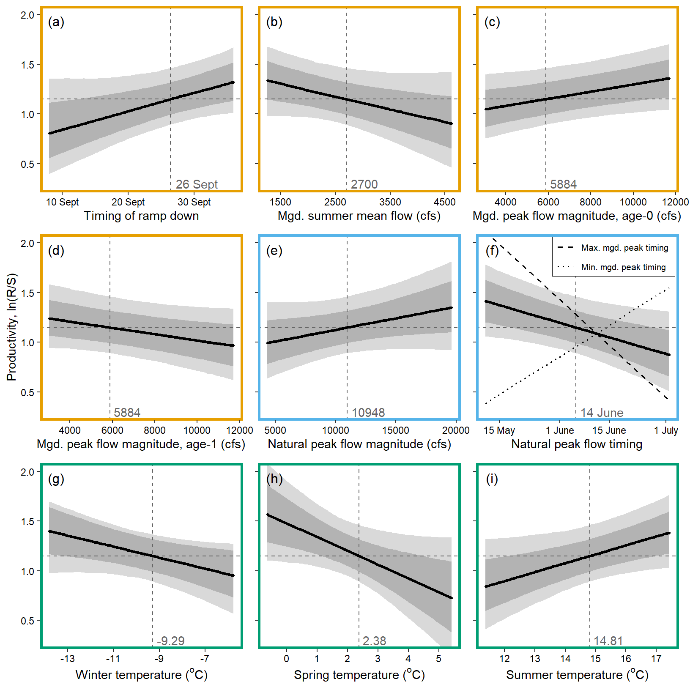
jpeg("Figures/Marginal Effects/ReddCounts_Ricker_CovarModel_MarginalEffects_Combined.jpg", units = "in", width = 8.5, height = 8.5, res = 1500)
cp
dev.off()png
2 Get raw covariate data for plotting
mgdcovs <- read_csv("Data/Derived/JLD_ManagedFlow_Covariates_BroodYear_1960-2022.csv") %>%
select(broodyr, jld_peakmag, jld_peaktime) %>%
mutate(z_jld_peakmag = (jld_peakmag - covsummary$mean[5])/covsummary$sd[5],
z_jld_peaktime = (jld_peaktime - covsummary$mean[6])/covsummary$sd[6])
natcovs <- read_csv("Data/Derived/SnakeTribs_NaturalFlow_Covariates_BroodYear_1960-2022.csv") %>%
filter(site == "SnakeNat") %>%
select(broodyr, natq_peakmag, natq_peaktime) %>%
mutate(z_natq_peakmag = (natq_peakmag - covsummary$mean[7])/covsummary$sd[7],
z_natq_peaktime = (natq_peaktime - covsummary$mean[8])/covsummary$sd[8])
mycovdat <- mgdcovs %>% left_join(natcovs)Number of values for calculation
nvalues <- 100Generate sequences of predictor data and transform to original scale
xjld <- seq(from = min(dat$z_jld_peaktime, na.rm = TRUE), to = max(dat$z_jld_peaktime, na.rm = TRUE), length.out = nvalues)
xnat <- seq(from = min(dat$z_natq_peaktime, na.rm = TRUE), to = max(dat$z_natq_peaktime, na.rm = TRUE), length.out = nvalues)
xjld.real <- (xjld * covsummary$sd[6]) + covsummary$mean[6]
xnat.real <- (xnat * covsummary$sd[8]) + covsummary$mean[8]Set up axes
xjld.axis <- c(242, 273, 303)
xjld.axis.scaled <- (xjld.axis - covsummary$mean[6]) / covsummary$sd[6]
xjld.axis.labels <- c("1 May", "1 June", "1 July")
xnat.axis <- c(256, 273, 287, 303)
xnat.axis.scaled <- (xnat.axis - covsummary$mean[8]) / covsummary$sd[8]
xnat.axis.labels <- c("15 May", "1 June", "15 June", "1 July")Predict productivity from model
z <- matrix(data = NA, nrow = nvalues, ncol = nvalues) # matrix of predictions
com <- matrix(data = NA, nrow = nvalues, ncol = nvalues) # matrix of combined flow
for(i in 1:nvalues) {
for(j in 1:nvalues) {
z[i,j] <- param.summary["mu.coef[7]",5]*xjld[i] + param.summary["mu.coef[9]",5]*xnat[j] + param.summary["mu.coef[14]",5]*xjld[i]*xnat[j]
}
}
z.cont <- ifelse(z < 0, 0, z) # trick for plotting single contour
range(z)[1] -0.7723106 0.9673778conttib <- expand_grid(xnat = xnat, xjld = xjld) %>%
mutate(prod = param.summary["mu.coef[7]",5]*xjld + param.summary["mu.coef[9]",5]*xnat + param.summary["mu.coef[14]",5]*xjld*xnat)
range(conttib$prod)[1] -0.7723106 0.9673778Plot set up
mylevels <- seq(-1, 1, by = 0.1) # specify location and number of breaks for plotting
mycols <- rev(hcl.colors(length(mylevels)-1, "Blue-Red 3"))
myddd <- mycovdat %>% select(broodyr, z_natq_peaktime, z_jld_peaktime) %>% filter(!is.na(z_natq_peaktime), !is.na(z_jld_peaktime))
myhull <- chull(myddd %>% select(-broodyr))par(mar = c(5,5,1,1), mgp = c(3.5,1,0))
filled.contour(x = xnat, y = xjld, z = t(z),
plot.title = {
title(xlab = "Natural peak flow timing")
title(ylab = "Managed peak flow timing")
},
levels = mylevels,
col = mycols,
plot.axes = {
contour(x = xnat, y = xjld, z = t(z), levels = 0, lty = 3, lwd = 1, col = "grey40",
drawlabels = F, axes = F, frame.plot = F, add = T);
# segments(myddd$z_natq_peaktime[myhull], myddd$z_jld_peaktime[myhull],
# myddd$z_natq_peaktime[c(myhull[length(myhull)], myhull[-length(myhull)])],
# myddd$z_jld_peaktime[c(myhull[length(myhull)], myhull[-length(myhull)])],
# col = "grey40", lwd = 2) # Draw convex hull lines
axis(1, at = xnat.axis.scaled, labels = xnat.axis.labels);
axis(2, at = xjld.axis.scaled, labels = xjld.axis.labels);
points(myddd$z_natq_peaktime, myddd$z_jld_peaktime)
})Exploratory analysis to see if flood duration is associated with productivity, as the interaction between the timing of natural and managed peak spring flows implies as much.
From the interaction plot above, derive difference in peak flow timing and plot against predicted productivity:
conttib %>%
mutate(xnat_real = (xnat * covsummary$sd[8]) + covsummary$mean[8],
xjld_real = (xjld * covsummary$sd[6]) + covsummary$mean[6]) %>%
mutate(difff = abs(xnat_real - xjld_real)) %>%
ggplot(aes(x = difff, y = prod)) +
geom_point()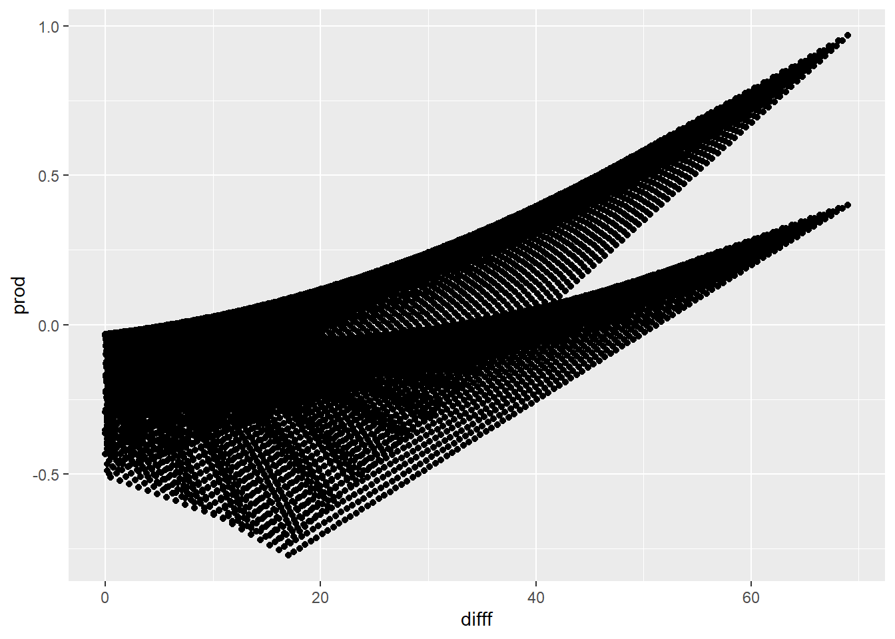
Now look at association between flood duration (lagged 3 and 4 years) and latent productivity.
Generally, when we use flood duration calculated using flow records standardized by year, we see a non-linear relationship between flood duration and productivity. Potentially indicating that flood duration calculated in this way interacts with some other variable (e.g., flood magnitude) to influence productivity. Indeed, when we use flood duration calculate from raw flow records, we see a generally positive linear relationship, providing reasonable post-hoc evidence that long periods of elevated streamflow have a positive effect on productivity, as hypothesized from the interaction between natural and managed peak flow timing.
head(param.summary) mean sd 2.5% 25% 50% 75% 97.5% Rhat
A[1] 1.077086 0.1867074 0.6939620 0.9589434 1.081459 1.195765 1.446672 1.001755
A[2] 1.107748 0.2288303 0.6697206 0.9637958 1.097771 1.238657 1.605090 1.001607
A[3] 1.272418 0.2387507 0.8866776 1.1004579 1.240625 1.419223 1.804258 1.004253
A[4] 1.110802 0.2018552 0.7100361 0.9846001 1.106778 1.232314 1.526012 1.002491
A[5] 1.118460 0.1979021 0.7468010 0.9928939 1.114735 1.236473 1.532194 1.000608
A[6] 1.176700 0.2125670 0.8041756 1.0377785 1.160428 1.300397 1.647619 1.000694
n.eff
A[1] 3800
A[2] 4000
A[3] 2000
A[4] 3000
A[5] 5000
A[6] 5000flooddur <- read_csv("Data/Derived/FloodDuration.csv") %>%
mutate(broodyr = year - 1)
latentprod <- matrix(data = NA, nrow = 13, ncol = 51)
for (i in 1:13) {
for (j in 5:55) {
latentprod[i,j-4] <- log(exp(param.summary[paste("loglatent[", i, ",", j, "]", sep = ""),1]) / exp(param.summary[paste("loglatent[", i, ",", j-4, "]", sep = ""),1]))
}
}
floodtib <- tibble(population = rep(pops, each = 51),
year = c(t(years)),
latentprod = c(t(latentprod))) %>%
mutate(broodyr4 = year - 4,
broodyr3 = year - 3) %>%
left_join(flooddur %>%
select(broodyr, durflood, durflood_raw) %>%
rename(durflood4 = durflood, durflood_raw4 = durflood_raw),
by = c("broodyr4" = "broodyr")) %>%
left_join(flooddur %>%
select(broodyr, durflood, durflood_raw) %>%
rename(durflood3 = durflood, durflood_raw3 = durflood_raw),
by = c("broodyr3" = "broodyr"))floodtib %>%
ggplot() +
geom_point(aes(x = durflood3, y = latentprod)) +
geom_hline(yintercept = 0) +
geom_smooth(aes(x = durflood3, y = latentprod)) +
facet_wrap(~population, ncol = 5, scales = "free") +
theme_bw() + theme(panel.grid = element_blank()) +
xlab("Age-0 flood duration, lag 3 years (days)") + ylab("Latent productivity, ln(R/S)")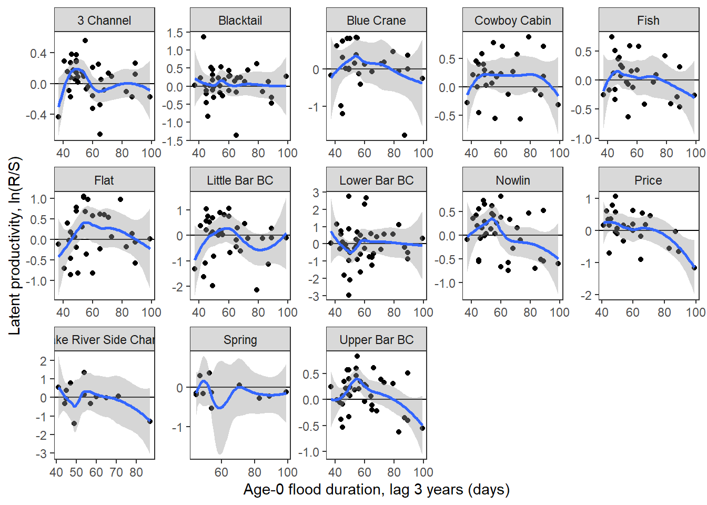
floodtib %>%
ggplot() +
geom_point(aes(x = durflood4, y = latentprod)) +
geom_hline(yintercept = 0) +
geom_smooth(aes(x = durflood4, y = latentprod)) +
facet_wrap(~population, ncol = 5, scales = "free") +
theme_bw() + theme(panel.grid = element_blank()) +
xlab("Age-0 flood duration, lag 4 years (days)") + ylab("Latent productivity, ln(R/S)")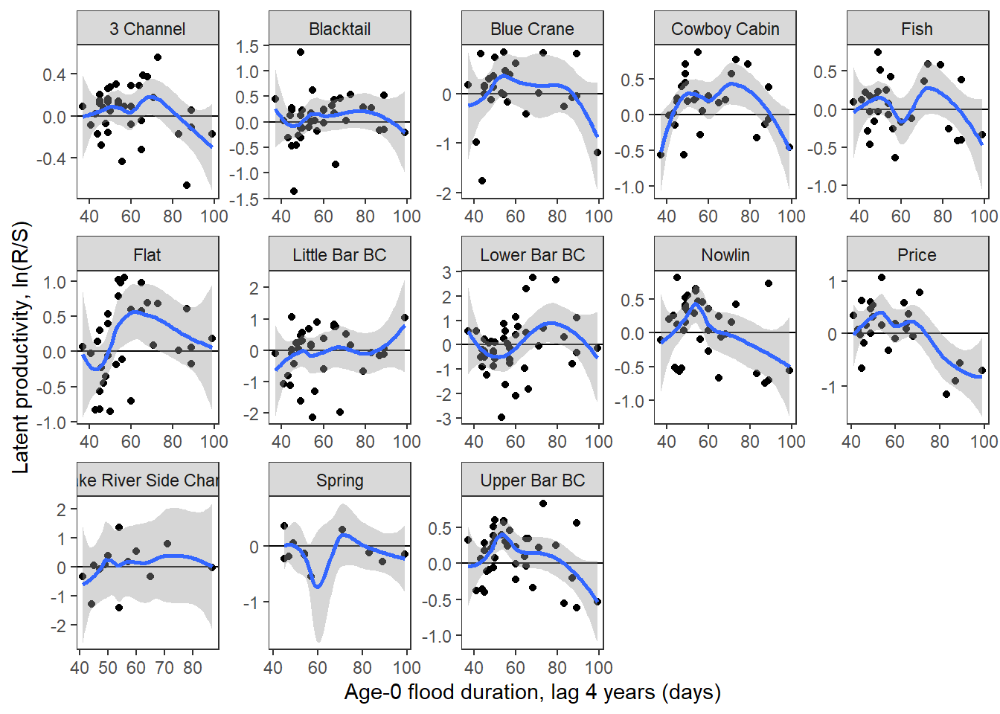
p1 <- floodtib %>%
ggplot() +
geom_point(aes(x = durflood4, y = latentprod, color = population)) +
geom_hline(yintercept = 0) +
geom_smooth(aes(x = durflood4, y = latentprod), color = "black") +
theme_bw() + theme(panel.grid = element_blank()) +
xlab("Age-0 flood duration (days)") + ylab("Latent productivity, ln(R/S)")
p2 <- floodtib %>%
ggplot() +
geom_point(aes(x = durflood3, y = latentprod, color = population)) +
geom_hline(yintercept = 0) +
geom_smooth(aes(x = durflood3, y = latentprod), color = "black") +
theme_bw() + theme(panel.grid = element_blank()) +
xlab("Age-1 flood duration (days)") + ylab(" ")
ggpubr::ggarrange(p1, p2, common.legend = TRUE, legend = "right")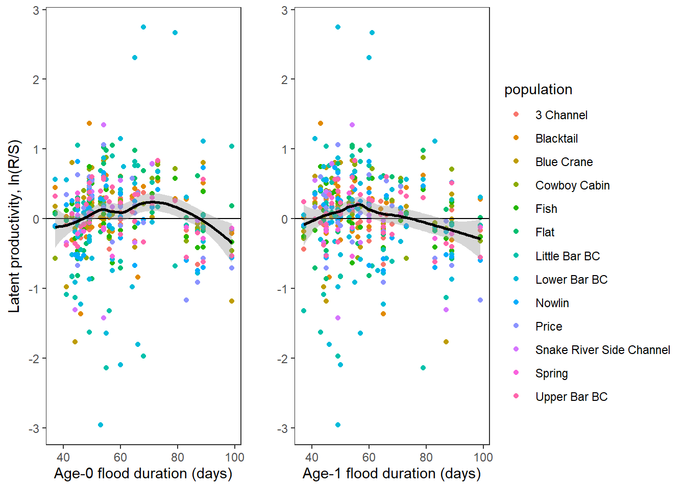
p1 <- floodtib %>%
ggplot() +
geom_point(aes(x = durflood_raw4, y = latentprod, color = population)) +
geom_hline(yintercept = 0) +
geom_smooth(aes(x = durflood_raw4, y = latentprod), color = "black") +
theme_bw() + theme(panel.grid = element_blank()) +
xlab("Age-0 flood duration (days)") + ylab("Latent productivity, ln(R/S)")
p2 <- floodtib %>%
ggplot() +
geom_point(aes(x = durflood_raw3, y = latentprod, color = population)) +
geom_hline(yintercept = 0) +
geom_smooth(aes(x = durflood_raw3, y = latentprod), color = "black") +
theme_bw() + theme(panel.grid = element_blank()) +
xlab("Age-1 flood duration (days)") + ylab(" ")
ggpubr::ggarrange(p1, p2, common.legend = TRUE, legend = "right")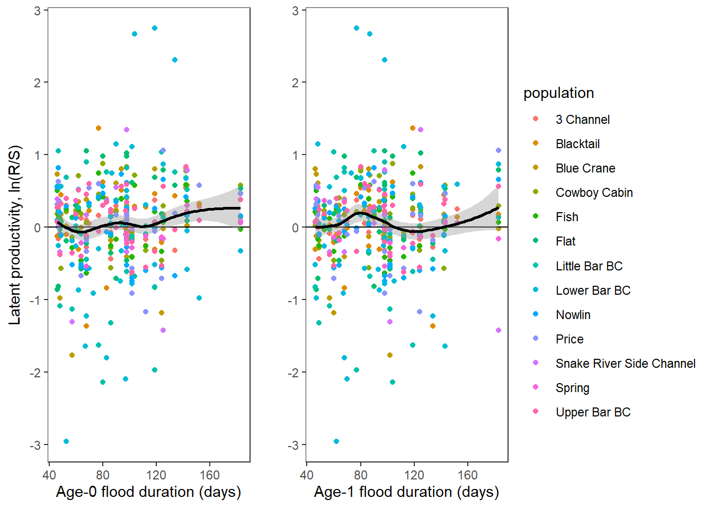
p1 <- dat2 %>% select(stream, broodyr, lnRS) %>% left_join(flooddur %>% select(broodyr, durflood)) %>%
ggplot(aes(x = durflood, y = lnRS)) +
geom_point() +
geom_hline(yintercept = 0) +
geom_smooth(method = "lm", formula = y ~ poly(x,2)) +
theme_bw() + theme(panel.grid = element_blank())
p2 <- dat2 %>% select(stream, broodyr, lnRS) %>% left_join(flooddur %>% select(broodyr, durflood_raw)) %>%
ggplot(aes(x = durflood_raw, y = lnRS)) +
geom_point() +
geom_hline(yintercept = 0) +
geom_smooth(method = "lm") +
theme_bw() + theme(panel.grid = element_blank())
ggpubr::ggarrange(p1, p2, common.legend = TRUE, legend = "right")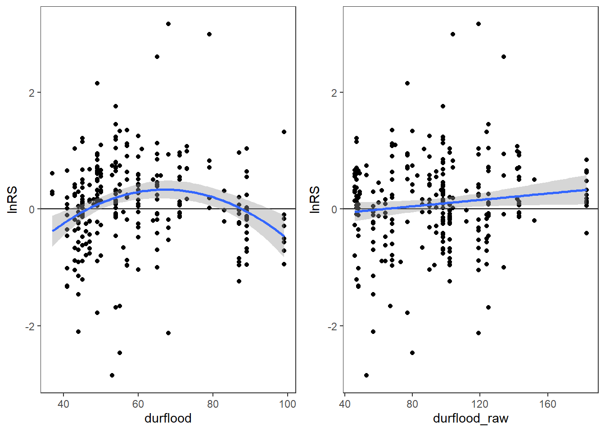
Write out figure showing non-linear relationship between flood duration (using flow records standardized by year) and latent productivity:
jpeg("Figures/Marginal Effects/LatentProductivity-FloodDurationSTD.jpg", units = "in", width = 3, height = 3, res = 1500)
floodtib %>%
ggplot() +
geom_point(aes(x = durflood4, y = latentprod), shape = 1) +
geom_hline(yintercept = 0, linetype = "dashed") +
geom_smooth(aes(x = durflood4, y = latentprod), method = "lm", formula = y ~ poly(x,2), lineend = "round") +
theme_bw() + theme(panel.grid = element_blank(), axis.text = element_text(color = "black")) +
xlab("Flood duration (days)") + ylab("Latent productivity, ln(R/S)")
dev.off()png
2 Polynomial regression summary: latent productivity ~ flood duration, std
summary(lm(latentprod ~ durflood4 + I(durflood4^2), floodtib))
Call:
lm(formula = latentprod ~ durflood4 + I(durflood4^2), data = floodtib)
Residuals:
Min 1Q Median 3Q Max
-3.06089 -0.24612 0.06051 0.31315 2.55514
Coefficients:
Estimate Std. Error t value Pr(>|t|)
(Intercept) -1.9338388 0.5043178 -3.835 0.000146 ***
durflood4 0.0635633 0.0159518 3.985 8.05e-05 ***
I(durflood4^2) -0.0004750 0.0001191 -3.988 7.95e-05 ***
---
Signif. codes: 0 '***' 0.001 '**' 0.01 '*' 0.05 '.' 0.1 ' ' 1
Residual standard error: 0.5883 on 394 degrees of freedom
(266 observations deleted due to missingness)
Multiple R-squared: 0.0389, Adjusted R-squared: 0.03402
F-statistic: 7.973 on 2 and 394 DF, p-value: 0.0004031Linear regression summary: latent productivity ~ flood duration, raw
summary(lm(latentprod ~ durflood_raw4, floodtib))
Call:
lm(formula = latentprod ~ durflood_raw4, data = floodtib)
Residuals:
Min 1Q Median 3Q Max
-2.92466 -0.25906 0.03429 0.33386 2.64228
Coefficients:
Estimate Std. Error t value Pr(>|t|)
(Intercept) -0.1482223 0.0880362 -1.684 0.0930 .
durflood_raw4 0.0021281 0.0009006 2.363 0.0186 *
---
Signif. codes: 0 '***' 0.001 '**' 0.01 '*' 0.05 '.' 0.1 ' ' 1
Residual standard error: 0.5951 on 395 degrees of freedom
(266 observations deleted due to missingness)
Multiple R-squared: 0.01394, Adjusted R-squared: 0.01144
F-statistic: 5.583 on 1 and 395 DF, p-value: 0.01862